ようこそ yōkoso · Bienvenido a tu guía 🎌
Esta guía crece con tus clases de みんなの日本語 (Minna no Nihongo). Usa el menú de la izquierda para navegar.
📊 Progreso
| Lección | Tema | Estado |
|---|---|---|
| L7 | Intercambio (dar/recibir/prestar/enseñar/llamar/escribir), もう／まだ, で・に・を, conversación (会話) + repaso final 文法チェック mō / mada, de・ni・o, (kaiwa), bunpō chekku | ✅ Completa 🎓 |
| ⚽ Mundial | Vocabulario y expresiones de la Copa Mundial | ✅ Completa |
| L8 | Adjetivos な e い (とても／あまり, な/い+sustantivo, negativo くない, 〜ですか, どう／どんな) na · i (totemo / amari, na/i + sustantivo, kunai, ~desu ka, dō / donna) | ✅ Completa |
| 🎴 Vocab clave | Todo el vocabulario nuevo junto (kanji · kana · romaji) para el examen — ahora plegado al final de 🗂️ Vocabulario (filtro ⭐) | ✅ Lista (L7–L8) |
| L9 | Gustos y habilidad: 〜が すき／きらい／じょうず／へた／にがて, とても／あまり, 〜が すきですか？, どんな〜が すきですか？, 〔verbo〕＋こと, わかる／ある, よく・だいたい・すこし・あまり・ぜんぜん, 〜が あります（たくさん・すこし）, じかん／ようじ／やくそく, 〜が ありますか？, わたしも, どうして〜か？ → 〜から, 〔razón〕から、〔resultado〕 + vocabulario ~ga suki / kirai / jōzu / heta / nigate, totemo / amari, ~ga suki desu ka?, donna ~ ga suki desu ka?, ~koto, wakaru / aru, yoku · daitai · sukoshi · amari · zenzen, ~ga arimasu (takusan · sukoshi), jikan / yōji / yakusoku, ~ga arimasu ka?, watashi mo, dōshite ~ka? → ~kara, 〔razón〕 kara, 〔resultado〕 | 🌱 Empezada |
| L10+ | — | ⏳ Cuando traigas los PDFs |
ℹ️ Cómo usar la guía
Hiragana y katakana completos
Gramática y frases por lección
Buscable y por categorías
ひらがな Hiragana
Básico — gojūon (46 sílabas)
Con dakuten ゛/ handakuten ゜— sonidos modificados
Combinados — yōon (kana + や/ゆ/よ ya/yu/yo pequeña)
カタカナ Katakana
Básico — gojūon (46 sílabas)
Con dakuten ゛/ handakuten ゜— sonidos modificados
Combinados — yōon
Lección 7 — Dar, recibir, prestar, enseñar, aprender y llamar
Verbos de intercambio. Todos usan la misma fórmula: A は B に 〔cosa〕を [verbo] (A wa B ni 〔cosa〕 o [verbo]).
🌿 Lo esencial de la L7 — si solo leés esto, alcanza
La L7 es la lección del intercambio: dar, recibir, prestar, enseñar, llamar y escribir. Todo entra en un mismo molde, A は B に 〔cosa〕を [verbo] (A wa B ni 〔cosa〕 o [verbo]). Si entendés estas 4 frases, tenés la lección. 🎁
📘 Las frases modelo del libro — 文型 (bunkei)
Fuente: libro «Nivel 2 JLPT N5» (Ninja Gakuen), 第7課 (dai nana ka), pág. 35. Traducción: pág. 31.
🏋️ Ejercicios del libro — 練習B (renshū B)
✅ = lo hiciste en clase (tocá la fecha para ir). Los demás son buenos para practicar solo.
- B1 〔medio〕で (~de) — はしで ごはんを たべます (hashi de gohan o tabemasu)
- B2 これは にほんごで なんですか？ (kore wa Nihongo de nan desu ka?) — ¿cómo se dice en japonés?
- B3 〔persona〕に 〔cosa〕を あげます／かします／おしえます／かきます／かけます (ni ~ o agemasu / kashimasu / oshiemasu / kakimasu / kakemasu)
- B4 〔persona〕に 〜を もらいました／かりました／ならいました (ni ~ o moraimashita / karimashita / naraimashita)
- B5 だれに 〜ましたか？ (dare ni ~mashita ka?) — ¿a quién / de quién?
- B6 なにを・どこで・いつ・だれに 〜ましたか？ (nani o · doko de · itsu · dare ni ~mashita ka?) — preguntas con detalles
- B7 もう 〜ましたか？ → はい、もう〜ました／いいえ、まだです (mō ~mashita ka? → hai, mō ~mashita / iie, mada desu)
Fuente: 練習B (renshū B), págs. 38–39.
🎧 Para cazar en anime
Frases de esta lección que vas a escuchar seguido. En el anime a veces suenan más cortas o más informales, pero ya las vas a reconocer.
- いただきます (itadakimasu) — antes de comer: “gracias por la comida”
- ごちそうさまでした (gochisōsama deshita) — después de comer
- いらっしゃいませ (irasshaimase) — ¡bienvenido! (en tiendas y restaurantes)
- もう 〜ましたか？ → まだです (mō ~mashita ka? → mada desu) — ¿ya…? → todavía no
- そろそろ しつれいします (sorosoro shitsurei shimasu) — ya me tengo que ir
🧭 Todo lo que vimos en la L7 (del índice de gramática)
Clases 21/05 y 04/06 あげます／もらいます (agemasu / moraimasu) · おしえます／ならいます (oshiemasu / naraimasu)
🧩 Partículas y fórmula
は (wa) = sujeto · に (ni) = la otra parte (a quién/de quién/dónde) · を (o) = el objeto
🎁 Dar / recibir あげる / もらう ageru / morau
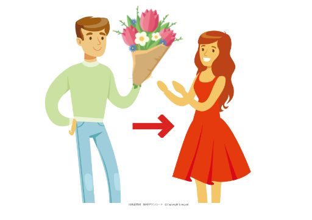
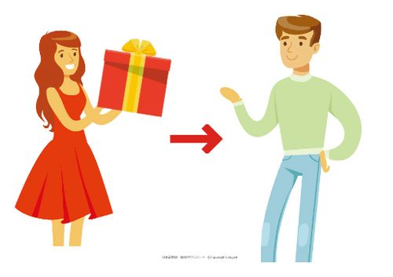
| Japonés | Romaji | Español |
|---|---|---|
| Daniさんは Amiさんに はなを あげます | Dani-san wa Ami-san ni hana o agemasu | Dani le da flores a Ami |
| Amiさんは Daniさんに はなを もらいます | Ami-san wa Dani-san ni hana o moraimasu | Ami recibe flores de Dani |
| Amiさんは Daniさんに プレゼントを あげます | Ami-san wa Dani-san ni purezento o agemasu | Ami le da un regalo a Dani |
| Daniさんは Amiさんに プレゼントを もらいます | Dani-san wa Ami-san ni purezento o moraimasu | Dani recibe un regalo de Ami |
| マットさんは おとうさんに 何を あげましたか？ | Matto-san wa otōsan ni nani o agemashita ka? | ¿Qué le dio Matt a su papá? |
| おとうさんは マットさんに 何を もらいましたか？ | Otōsan wa Matto-san ni nani o moraimashita ka? | ¿Qué recibió el papá de Matt? |
| マットさんは おかあさんに なにを あげましたか？ | Matto-san wa okāsan ni nani o agemashita ka? | ¿Qué le dio Matt a su mamá? |
| おかあさんは マットさんに なにを もらいましたか？ | Okāsan wa Matto-san ni nani o moraimashita ka? | ¿Qué recibió la mamá de Matt? |
| マットさんは だれに プレゼントを あげましたか？ | Matto-san wa dare ni purezento o agemashita ka? | ¿A quién le dio Matt un regalo? |
| ここさんは だれに プレゼントを もらいますか？ | Koko-san wa dare ni purezento o moraimasu ka? | ¿De quién recibe Koko un regalo? |
👨🏫 Enseñar / aprender おしえる / ならう oshieru / narau
sensei → gakusei (Nihongo)
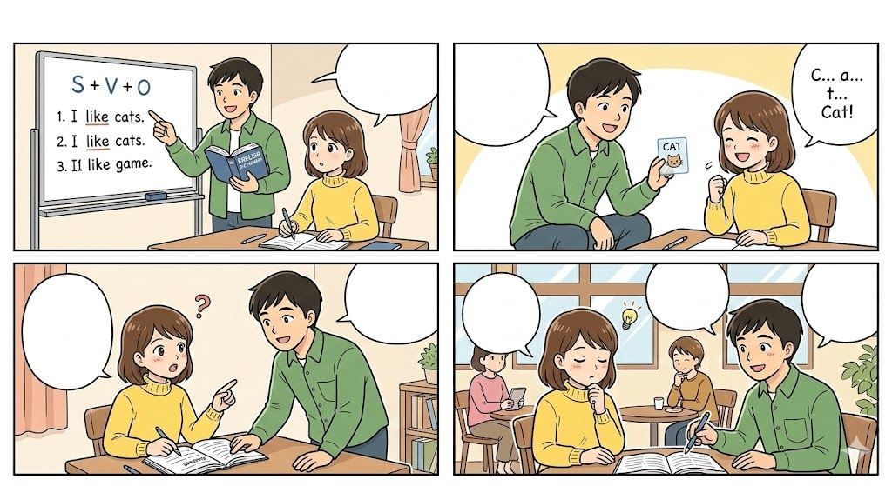
Matto → Koko
Koko ← Matto
| Japonés | Romaji | Español |
|---|---|---|
| せんせいは がくせいに にほんごを おしえます | Sensei wa gakusei ni Nihongo o oshiemasu | El profesor les enseña japonés a los estudiantes |
| がくせいは せんせいに にほんごを ならいました | Gakusei wa sensei ni Nihongo o naraimashita | Los estudiantes aprendieron japonés del profesor |
| せんせいは がくせいに かんじを おしえます | Sensei wa gakusei ni kanji o oshiemasu | El profesor les enseña kanji a los estudiantes |
| がくせいは せんせいに かんじを ならいました | Gakusei wa sensei ni kanji o naraimashita | Los estudiantes aprendieron kanji del profesor |
| せんせいは がくせいに 何を おしえましたか？ | Sensei wa gakusei ni nani o oshiemashita ka? | ¿Qué les enseñó el profesor a los estudiantes? |
| がくせいは せんせいに 何を ならいましたか？ | Gakusei wa sensei ni nani o naraimashita ka? | ¿Qué aprendieron los estudiantes del profesor? |
| マットさんは ここさんに なにを おしえましたか？ | Matto-san wa Koko-san ni nani o oshiemashita ka? | ¿Qué le enseñó Matt a Koko? (inglés) |
| ここさんは マットさんに なにを ならいましたか？ | Koko-san wa Matto-san ni nani o naraimashita ka? | ¿Qué aprendió Koko de Matt? (computación) |
| がくせいは だれに にほんごを ならいましたか？ | Gakusei wa dare ni Nihongo o naraimashita ka? | ¿De quién aprendieron japonés los estudiantes? |
| せんせいは だれに 日本語を おしえましたか？ | Sensei wa dare ni Nihongo o oshiemashita ka? | ¿A quién le enseñó japonés el profesor? |
| せんせいは だれに かんじを おしえましたか？ | Sensei wa dare ni kanji o oshiemashita ka? | ¿A quién le enseñó kanji el profesor? |
| がくせいは だれに かんじを ならいましたか？ | Gakusei wa dare ni kanji o naraimashita ka? | ¿De quién aprendieron kanji los estudiantes? |
Clase 11/06 かします／かります (kashimasu / karimasu) · でんわを かけます (denwa o kakemasu)
🤲 Prestar / pedir prestado ★ かす / かりる kasu / kariru
- かします (kashimasu) = prestar → el sujeto da algo temporalmente
- かります (karimasu) = pedir prestado → el sujeto recibe algo temporalmente
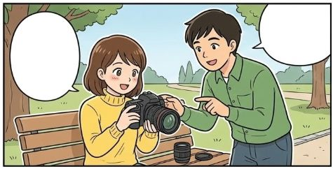
| Japonés | Romaji | Español |
|---|---|---|
| まっとさんは ここさんに おかねを かします | Matto-san wa Koko-san ni okane o kashimasu | Matt le presta dinero a Koko |
| ここさんは まっとさんに おかねを かりました | Koko-san wa Matto-san ni okane o karimashita | Koko pidió prestado dinero a Matt |
| エリさんは るなさんに かさを かります | Eri-san wa Runa-san ni kasa o karimasu | Eri pide prestado un paraguas a Runa |
| るなさんは えりさんに かさを かしました | Runa-san wa Eri-san ni kasa o kashimashita | Runa le prestó un paraguas a Eri |
| えりさんは るなさんに けしごむを かします | Eri-san wa Runa-san ni keshigomu o kashimasu | Eri le presta una goma a Runa |
| るなさんは えりさんに けしごむを かりました | Runa-san wa Eri-san ni keshigomu o karimashita | Runa pidió prestada una goma a Eri |
| えりさんは るなさんに なにを かしましたか？ | Eri-san wa Runa-san ni nani o kashimashita ka? | ¿Qué le prestó Eri a Runa? |
| ここさんは まっとさんに ほんを かります | Koko-san wa Matto-san ni hon o karimasu | Koko pide prestado un libro a Matt |
| ここさんは まっとさんに おかねを かりました | Koko-san wa Matto-san ni okane o karimashita | Koko pidió prestado dinero a Matt |
| まっとさんは ここさんに カメラを かしました | Matto-san wa Koko-san ni kamera o kashimashita | Matt le prestó una cámara a Koko |
| ここさんは まっとさんに カメラを かりました | Koko-san wa Matto-san ni kamera o karimashita | Koko pidió prestada una cámara a Matt |
| まっとさんは ここさんに じてんしゃを かしました | Matto-san wa Koko-san ni jitensha o kashimashita | Matt le prestó una bicicleta a Koko |
| ここさんは まっとさんに じてんしゃを かりました | Koko-san wa Matto-san ni jitensha o karimashita | Koko pidió prestada una bicicleta a Matt |
| わたしは ぎんこうに おかねを かります | Watashi wa ginkō ni okane o karimasu | Yo pido prestado dinero al banco |
| わたしは タニアさんに スマホを かしました | Watashi wa Tania-san ni sumaho o kashimashita | Yo le presté el celular a Tania |
📞 Llamar por teléfono ★ でんわを かけます／もらいます denwa o kakemasu / moraimasu
- El verbo de “hacer” NO es あげます (agemasu), sino かけます (kakemasu) = hacer una llamada (marcar / llamar).
- Para “recibir” se usa el de siempre: もらいます (moraimasu) = recibir una llamada.
⚠️ でんわ (denwa) lleva を (o) (el objeto) · la persona (a quién / de quién) lleva に (ni)
| Japonés | Romaji | Español |
|---|---|---|
| ここさんは おかあさんに でんわを かけます | Koko-san wa okāsan ni denwa o kakemasu | Koko le hace una llamada a su mamá |
| おかあさんは ここさんに でんわを もらいます | Okāsan wa Koko-san ni denwa o moraimasu | La mamá recibe una llamada de Koko |
| ここさんは おとうさんに でんわを かけます | Koko-san wa otōsan ni denwa o kakemasu | Koko llama a su papá |
| おとうさんは ここさんに でんわを もらいました | Otōsan wa Koko-san ni denwa o moraimashita | El papá recibió una llamada de Koko |
| わたしは おきゃくさんに でんわを かけます | Watashi wa okyakusan ni denwa o kakemasu | Yo le hago una llamada al cliente |
| おきゃくさんは わたしに でんわを もらいます | Okyakusan wa watashi ni denwa o moraimasu | El cliente recibe una llamada mía |
| (persona)は だれに でんわを かけますか？ | (persona) wa dare ni denwa o kakemasu ka? | ¿A quién le hace una llamada (persona)? |
| なみさんは だれに でんわを もらいましたか？ | Nami-san wa dare ni denwa o moraimashita ka? | ¿De quién recibió Nami una llamada? |
| ここさんは だれに でんわを かけましたか？ | Koko-san wa dare ni denwa o kakemashita ka? | ¿A quién llamó Koko? |
| おとうさんは だれに でんわを もらいましたか？ | Otōsan wa dare ni denwa o moraimashita ka? | ¿De quién recibió el papá una llamada? |
Clase 18/06 B3 · かきます・おくります (kakimasu · okurimasu)
✍️ Escribir / enviar ★ かきます・おくります・もらいます kakimasu · okurimasu · moraimasu
- かきます (kakimasu) = escribir (escribes la carta)
- おくります (okurimasu) = enviar / mandar (la mandas)
- もらいます (moraimasu) = recibir (la recibe la otra persona)
は (wa) = sujeto · に (ni) = la otra persona · を (o) = lo que se escribe o envía
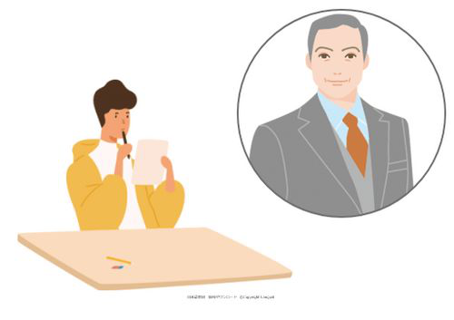
tegami o kakimasu
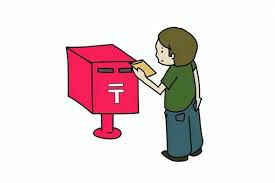
tegami o okurimasu (enviar)
mēru / messēji o okurimasu
| Japonés | Romaji | Español |
|---|---|---|
| ケニーさんは マットさんに てがみを かきます | Kenī-san wa Matto-san ni tegami o kakimasu | Kenny le escribe una carta a Matt |
| ケニーさんは マットさんに てがみを おくりました | Kenī-san wa Matto-san ni tegami o okurimashita | Kenny le envió una carta a Matt |
| マットさんは ケニーさんに てがみを もらいました | Matto-san wa Kenī-san ni tegami o moraimashita | Matt recibió una carta de Kenny |
| ここさんは おかあさんに メール／メッセージを おくります | Koko-san wa okāsan ni mēru / messēji o okurimasu | Koko le manda un correo / mensaje a su mamá |
| おかあさんは ここさんに メッセージを もらいます | Okāsan wa Koko-san ni messēji o moraimasu | La mamá recibe un mensaje de Koko |
| わたしは ははに てがみを かきます | Watashi wa haha ni tegami o kakimasu | Yo le escribo una carta a mi mamá |
🧪 Repaso B3 — di la frase completa
| Pista | Frase | Español |
|---|---|---|
| 1) イーさん・本・かす | イーさんに 本を かします Ī-san ni hon o kashimasu | Le presto un libro a Yi |
| 2) たろうちゃん・えいご・おしえる | たろうちゃんに えいごを おしえます Tarō-chan ni Eigo o oshiemasu | Le enseño inglés a Taro |
| 3) はは・てがみ・かく | ははに てがみを かきます Haha ni tegami o kakimasu | Le escribo una carta a mi mamá |
| 4) シュミットさん・でんわ・かける | シュミットさんに でんわを かけます Shumitto-san ni denwa o kakemasu | Le hago una llamada al Sr. Schmidt |
Clase 25/06 もう／まだ (mō / mada) · B4
⏳ ¿Ya o todavía no? ★ もう / まだ mō / mada
- もう (mō) = ya → もう 〔V ました〕か？ (mō 〔V mashita〕 ka?) = ¿Ya …?
- Respuesta sí: はい、もう 〔V〕ました (hai, mō 〔V〕mashita) = sí, ya lo hice
- Respuesta no: いいえ、まだです (iie, mada desu) = no, todavía no
- “Lo estoy haciendo ahora”: いいえ、いま 〔V〕ています (iie, ima 〔V〕te imasu)
はい、もう〜ました (hai, mō ~mashita) · いいえ、まだです (iie, mada desu) · いいえ、いま〜ています (iie, ima ~te imasu)
mō yorugohan o tabemashita ka?
hai, mō tabemashita
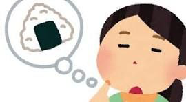
iie, mada desu
| Japonés | Romaji | Español |
|---|---|---|
| もう よるごはんを たべましたか？ | Mō yorugohan o tabemashita ka? | ¿Ya cenaste? |
| ↳ いいえ、まだです | Iie, mada desu | No, todavía no |
| もう ひらがなを べんきょうしましたか？ | Mō hiragana o benkyō shimashita ka? | ¿Ya estudiaste hiragana? |
| ↳ はい、もう べんきょうしました | Hai, mō benkyō shimashita | Sí, ya estudié |
| もう るかくんは おきましたか？ | Mō Ruka-kun wa okimashita ka? | ¿Ya se levantó Ruka? |
| ↳ いいえ、まだです | Iie, mada desu | No, todavía no |
| もう るかくんは ねましたか？ | Mō Ruka-kun wa nemashita ka? | ¿Ya se durmió Ruka? |
| ↳ はい、もう ねました | Hai, mō nemashita | Sí, ya se durmió |
| もう スマブラを しましたか？ | Mō Sumabura o shimashita ka? | ¿Ya jugaste Smash Bros? |
| ↳ はい、もう しました | Hai, mō shimashita | Sí, ya jugué |
| もう クリスマスの プレゼントを かいましたか？ | Mō kurisumasu no purezento o kaimashita ka? | ¿Ya compraste el regalo de Navidad? |
| ↳ いいえ、まだです | Iie, mada desu | No, todavía no |
| もう かんじを べんきょうしましたか？ | Mō kanji o benkyō shimashita ka? | ¿Ya estudiaste kanji? |
| ↳ いいえ、いま べんきょうしています | Iie, ima benkyō shite imasu | No, lo estoy estudiando ahora |
| もう とうきょうへ いきましたか？ | Mō Tōkyō e ikimashita ka? | ¿Ya fuiste a Tokio? |
| ↳ いいえ、まだです | Iie, mada desu | No, todavía no |
🧪 Repaso B4 — recibir / aprender (pasado)
| Pista | Frase | Español |
|---|---|---|
| 1) カリナさん・本・かりる | カリナさんに 本を かりました Karina-san ni hon o karimashita | Pedí prestado un libro a Karina |
| 2) ワンさん・ちゅうごくご・ならう | ワンさんに ちゅうごくごを ならいました Wan-san ni Chūgokugo o naraimashita | Aprendí chino de Wang |
| 3) きむらさん・メール・もらう | きむらさんに メールを もらいました Kimura-san ni mēru o moraimashita | Recibí un correo de Kimura |
| 4) サントスさん・でんわ・もらう | サントスさんに でんわを もらいました Santosu-san ni denwa o moraimashita | Recibí una llamada de Santos |
Clase 02/07 かいわ (kaiwa) · いらっしゃい (irasshai) · いただきます (itadakimasu)
🗣️ Conversación útil ★ 会話 (kaiwa)
Expresiones fijas para el día a día (recibir visitas, comer, elogiar).
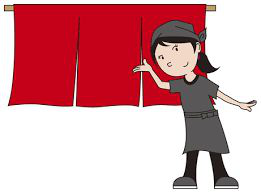
irasshai(mase)
¡Bienvenido!
dōzo oagari kudasai
Pase, adelante
~ wa ikaga desu ka?
¿Le gustaría ~?
itadakimasu
(antes de comer)
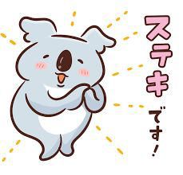
suteki desu ne
¡Qué lindo!
omiyage
souvenir / regalo de viaje
| Japonés | Romaji | Cuándo se usa |
|---|---|---|
| いらっしゃい／いらっしゃいませ | irasshai / irasshaimase | Recibir a alguien con calidez. La forma 〜ませ es la de tiendas y locales. |
| どうぞ おあがりください | dōzo oagari kudasai | Invitar educadamente a alguien a entrar a tu casa: “pase / adelante”. |
| 〔sustantivo〕は いかがですか？ | ~ wa ikaga desu ka? | Ofrecer algo con cortesía: “¿le gustaría ~? / ¿qué tal ~?”. (お茶は いかがですか？) |
| いただきます | itadakimasu | Antes de comer: agradecer por la comida y a quien la preparó. |
| ごちそうさまでした | gochisōsama deshita | Después de comer: “gracias por la comida”. |
| すてきですね | suteki desu ne | Elogiar algo bonito o atractivo: “¡qué lindo!”. |
| おみやげ | omiyage | Regalo/souvenir que traes de un viaje para familia o amigos. |
Clase 03/09 もう いっぱい いかがですか (mō ippai ikaga desu ka) · けっこうです (kekkō desu) · B5
☕ En una visita — ofrecer, rechazar y despedirse
mō ippai ikaga desu ka?
¿Le gustaría otra taza?
iie, kekkō desu
No, gracias (así estoy bien)
sorosoro shitsurei shimasu
Ya me tengo que ir
mata irasshatte kudasai
Vuelva a visitarnos
| Japonés | Romaji | Cuándo se usa |
|---|---|---|
| 〔algo〕、もういっぱい いかがですか？ | ~, mō ippai ikaga desu ka? | El anfitrión ofrece otra porción: “¿le gustaría otro/a ~?” (コーヒー、もういっぱい いかがですか？) |
| いいえ、けっこうです | iie, kekkō desu | Forma cortés de rechazar algo que te ofrecen: “no, gracias, estoy bien”. |
| そろそろ しつれいします（失礼します） | sorosoro shitsurei shimasu | Anunciar cortésmente que ya te vas: “ya es hora de retirarme”. |
| また いらっしゃってください | mata irasshatte kudasai | El anfitrión invita al invitado a volver: “por favor, vuelva a visitarnos”. |
🧪 Repaso B5 — ¿A quién? (だれに … ましたか) dare ni … mashita ka
| Japonés | Romaji | Español |
|---|---|---|
| だれに てがみを かきましたか？ | Dare ni tegami o kakimashita ka? | ¿A quién le escribiste una carta? |
| ↳ ちちに てがみを かきました | Chichi ni tegami o kakimashita | Le escribí una carta a mi papá |
| だれに でんわを かけましたか？ | Dare ni denwa o kakemashita ka? | ¿A quién llamaste? |
| ↳ グプタさんに でんわを かけました | Guputa-san ni denwa o kakemashita | Llamé al Sr. Gupta |
| だれに プレゼントを もらいましたか？ | Dare ni purezento o moraimashita ka? | ¿De quién recibiste un regalo? |
| ↳ ははに もらいました | Haha ni moraimashita | Lo recibí de mi mamá |
| だれに おかねを かりましたか？ | Dare ni okane o karimashita ka? | ¿De quién pediste dinero prestado? |
| ↳ やまださんに かりました | Yamada-san ni karimashita | Se lo pedí prestado a Yamada |
✅ Chequeo final L7 で・に・を (de · ni · o) · もう／まだ (mō / mada)
✅ Chequeo final de gramática — L7 文法チェック bunpō chekku
- で (de) = medio/instrumento o lugar de acción → なんで (nande) (¿con qué?) · どこで (doko de) (¿dónde?)
- に (ni) = destinatario (persona) · momento (tiempo)
- を (o) = objeto directo
| Frase (respuesta correcta) | Romaji | Por qué |
|---|---|---|
| れい：ナイフで きります | naifu de kirimasu | で = con qué (instrumento) |
| はしで たべます | hashi de tabemasu | なんで→ con palillos (medio). Ojo: しょくどうで responde a どこで (dónde) |
| ともだちに CDを かりました | tomodachi ni CD o karimashita | かりる = pedir prestado (luego “escuchemos juntos” → yo lo tengo) |
| せんせいに にほんごを ならいました | sensei ni Nihongo o naraimashita | ならう lleva に (persona); べんきょう no |
| A:もう…しましたか／B:いいえ、まだです | mō…shimashita ka / iie, mada desu | もう = ya (pregunta) · まだ = todavía no (respuesta) |
| メールで おくります | mēru de okurimasu | で = por (medio de envío) |
| にほんごで てがみを かきます | Nihongo de tegami o kakimasu | で = en (idioma) |
| ともだちに でんわを かけます | tomodachi ni denwa o kakemasu | に = destinatario (no へ) |
| たんじょうびに ははに はなを あげました | tanjōbi ni haha ni hana o agemashita | に = momento (en el cumpleaños) + に = destinatario (a mamá) |
🎓 ¡Fin de la Lección 7! おつかれさま！ otsukaresama!
Dominás la fórmula A は B に 〔cosa〕を [verbo] (A wa B ni 〔cosa〕 o [verbo]) con あげる・もらう・かす・かりる・おしえる・ならう・かける・かく・おくる (ageru・morau・kasu・kariru・oshieru・narau・kakeru・kaku・okuru), más もう／まだ (mō / mada) y las partículas で・に・を (de・ni・o). 🎉Lección 8 — Adjetivos な e い na · i
Los adjetivos describen cómo es algo o alguien. Hay dos tipos: los な (na) (llevan な (na) antes del sustantivo) y los い (i) (van directo, sin な (na)). Abajo: reglas y ejemplos de cada uno.
🌿 Lo esencial de la L8 — si solo leés esto, alcanza
La L8 es la lección de los adjetivos: cómo es algo o alguien. Hay dos familias, los な (na) y los い (i), y cada una tiene su forma de decirse sola y de ir antes de un sustantivo. Las 4 frases del libro son justo eso. 🌸
📘 Las frases modelo del libro — 文型 (bunkei)
Fuente: libro «Nivel 2 JLPT N5» (Ninja Gakuen), 第8課 (dai hachi ka), pág. 51. Traducción: pág. 47.
🏋️ Ejercicios del libro — 練習B (renshū B)
✅ = lo hiciste en clase (tocá la fecha para ir). Los demás son buenos para practicar solo.
- B1 〔persona〕は 〔adjetivo〕です (~wa ~desu) — ミラーさんは しんせつです (Mirā-san wa shinsetsu desu)
- B2 Negativo な: 〜じゃ ありません (~ja arimasen)
- B3 Negativo い: い→くないです (i → kunai desu)
- B4 Preguntar: 〜ですか？ → はい／いいえ (~desu ka? → hai / iie)
- B5 〜は どうですか？ → そして／が (~wa dō desu ka? → soshite / ga)
- B6 Adjetivo + sustantivo: にぎやかな まちです (nigiyaka na machi desu)
- B7 どんな 〜ですか？ (donna ~desu ka?) — ¿qué tipo de ~?
- B8 Adjetivo + sustantivo dentro de la oración: きれいな はなを かいました (kirei na hana o kaimashita)
Fuente: 練習B (renshū B), págs. 54–55.
🎧 Para cazar en anime
Frases de esta lección que vas a escuchar seguido. En el anime a veces suenan más cortas o más informales, pero ya las vas a reconocer.
- かわいい！ (kawaii!) — ¡qué tierno!
- おいしい！ (oishii!) — ¡qué rico!
- きれい… (kirei…) — ¡qué lindo! / ¡qué hermoso!
- おもしろい (omoshiroi) — ¡qué interesante / divertido!
- いいです／よくないです (ii desu / yokunai desu) — está bien / no está bien
🧭 Todo lo que vimos en la L8 (del índice de gramática)
Clase 16/07 B7 · adjetivos な (na) · とても／あまり (totemo / amari) · どうですか (dō desu ka)
🧪 Repaso B7 — もう／まだ (de L7) mō / mada
| Japonés | Romaji | Español |
|---|---|---|
| もう しゅくだいを しましたか？ | Mō shukudai o shimashita ka? | ¿Ya hiciste la tarea? |
| ↳ いいえ、まだです | Iie, mada desu | No, todavía no |
| もう きょうとへ いきましたか？ | Mō Kyōto e ikimashita ka? | ¿Ya fuiste a Kioto? |
| ↳ はい、もう いきました | Hai, mō ikimashita | Sí, ya fui |
| ミラーさんは もう かえりましたか？ | Mirā-san wa mō kaerimashita ka? | ¿El Sr. Miller ya volvió (a casa)? |
| ↳ いいえ、まだです | Iie, mada desu | No, todavía no |
📏 Las reglas del adjetivo な na
Con これ・それ (kore・sore)… el patrón base es 〔tema〕は 〔adjetivo〕です (〔tema〕 wa 〔adjetivo〕 desu).
このへやは きれいです (kono heya wa kirei desu) = Esta habitación es bonita/está limpia
このへやは きれいじゃありません (kono heya wa kirei ja arimasen) = Esta habitación no es bonita
とても (totemo) = muy (con afirmativo) · あまり (amari) = no muy (siempre con negativo)
きれいな はな (kirei na hana) = una flor bonita · ゆうめいな ところ (yūmei na tokoro) = un lugar famoso
とうきょうは どうですか？ → とても すてきです (Tōkyō wa dō desu ka? → totemo suteki desu) (¿Qué tal Tokio? → Es muy lindo)
🗂️ Adjetivos な de esta clase na
💚 Ejemplos con とても (positivo) totemo
| Japonés | Romaji | Español |
|---|---|---|
| アーニャちゃんは とても げんきです | Ānya-chan wa totemo genki desu | Anya es muy enérgica |
| グリフィスは とても ハンサムです | Gurifisu wa totemo hansamu desu | Griffith es muy guapo |
| たなかさんは とても しんせつです | Tanaka-san wa totemo shinsetsu desu | Tanaka es muy amable |
| Tucanは とても ゆうめいです | Tucan wa totemo yūmei desu | El tucán es muy famoso |
| Mushiは とても べんりです | Mushi wa totemo benri desu | Mushi es muy conveniente |
| ワットさんは とても ひまです | Watto-san wa totemo hima desu | Watt tiene mucho tiempo libre |
| ピザは とても おいしいです | Piza wa totemo oishii desu | La pizza es muy rica (おいしい = adj い) |
💔 Ejemplos con あまり (negativo) amari
| Japonés | Romaji | Español |
|---|---|---|
| うみは あまり きれいじゃありません | Umi wa amari kirei ja arimasen | El mar no es muy bonito |
| やまださんは あまり ハンサムじゃありません | Yamada-san wa amari hansamu ja arimasen | Yamada no es muy guapo |
| わかやまは あまり ゆうめいじゃありません | Wakayama wa amari yūmei ja arimasen | Wakayama no es muy famoso |
| へやは あまり きれいじゃありません | Heya wa amari kirei ja arimasen | La habitación no está muy limpia |
| とうきょうは あまり しずかじゃありません | Tōkyō wa amari shizuka ja arimasen | Tokio no es muy tranquilo |
| アブラムさんは あまり ひまじゃありません | Aburamu-san wa amari hima ja arimasen | Abram no tiene mucho tiempo libre |
| このレストランは あまり すてきじゃありません | Kono resutoran wa amari suteki ja arimasen | Este restaurante no es muy lindo |
🔗 Ejemplos con な + sustantivo na
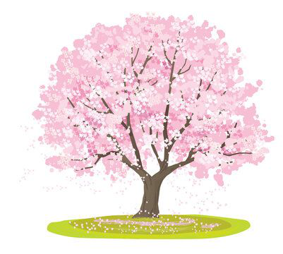
sakura wa kirei na hana desu
Tōkyō wa yūmei na tokoro desu
Ānya wa genki na kodomo desu
Karina-san wa shinsetsu na sensei desu
| Japonés | Romaji | Español |
|---|---|---|
| さくらは きれいな はなです | Sakura wa kirei na hana desu | El sakura es una flor bonita |
| とうきょうは ゆうめいな ところです | Tōkyō wa yūmei na tokoro desu | Tokio es un lugar famoso |
| とうきょうは べんりな ところです | Tōkyō wa benri na tokoro desu | Tokio es un lugar conveniente |
| アーニャは げんきな こどもです | Ānya wa genki na kodomo desu | Anya es una niña enérgica |
| かりなさんは しんせつな せんせいです | Karina-san wa shinsetsu na sensei desu | Karina es una profesora amable |
| ルカくんは げんきな いぬです | Ruka-kun wa genki na inu desu | Ruka es un perro enérgico |
| やまは しずかな ところです | Yama wa shizuka na tokoro desu | La montaña es un lugar tranquilo |
| コンビニは べんりな みせです | Konbini wa benri na mise desu | El konbini es una tienda conveniente |
❓ Ejemplos con どうですか (pedir opinión) dō desu ka
AMPM wa dō desu ka? → benri desu
Nihon ryōri wa dō desu ka? → totemo oishii desu
| Japonés | Romaji | Español |
|---|---|---|
| とうきょうは どうですか？ | Tōkyō wa dō desu ka? | ¿Qué tal Tokio? |
| ↳ とても すてきです | Totemo suteki desu | Es muy lindo |
| AMPMは どうですか？ | AMPM wa dō desu ka? | ¿Qué tal el AMPM (konbini)? |
| ↳ べんりです | Benri desu | Es conveniente |
| にほんりょうりは どうですか？ | Nihon ryōri wa dō desu ka? | ¿Qué tal la comida japonesa? |
| ↳ とても おいしいです | Totemo oishii desu | Es muy rica |
Clase 23/07 どんな〜ですか (donna ~ desu ka) · adjetivos い (i) · opuestos
❔ どんな〜ですか？ (¿qué tipo de ~?) donna ~ desu ka?
- どうですか？ (dō desu ka?) = ¿qué tal? (opinión) → とても すてきです (totemo suteki desu)
- どんな〔sustantivo〕ですか？ (donna 〔sustantivo〕 desu ka?) = ¿qué tipo de 〔sust.〕? → se responde con un adjetivo o un nombre + sustantivo
おおさかは どんな ところですか？ → にぎやかな ところです (Ōsaka wa donna tokoro desu ka? → nigiyaka na tokoro desu)
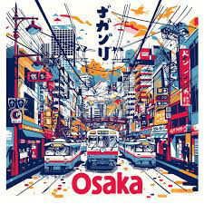
Ōsaka wa donna tokoro desu ka?
→ にぎやかな ところです (animado)
Wanpīsu wa donna manga desu ka?
→ ゆうめいな マンガです
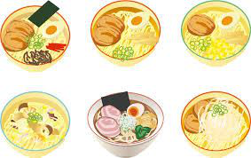
donna rāmen o tabemashita ka?
→ とんこつラーメンを たべました
| Japonés | Romaji | Español |
|---|---|---|
| おおさかは どんなところですか？ | Ōsaka wa donna tokoro desu ka? | ¿Qué tipo de lugar es Osaka? |
| ↳ おおさかは にぎやかな ところです | Ōsaka wa nigiyaka na tokoro desu | Osaka es un lugar animado |
| ワンピースは どんなマンガですか？ | Wanpīsu wa donna manga desu ka? | ¿Qué tipo de manga es One Piece? |
| ↳ ゆうめいな マンガです | Yūmei na manga desu | Es un manga famoso |
| さいきん どんなえいがを みましたか？ | Saikin donna eiga o mimashita ka? | ¿Qué tipo de película viste últimamente? |
| ↳ こわいえいがを みました | Kowai eiga o mimashita | Vi una película de terror |
| さいきん どんなおんがくを ききましたか？ | Saikin donna ongaku o kikimashita ka? | ¿Qué tipo de música escuchaste últimamente? |
| ↳ スペインごの おんがくを ききました | Supeingo no ongaku o kikimashita | Escuché música en español |
🅰️ Adjetivos い (い-keiyōshi) i · i-keiyōshi
Los adjetivos que terminan en い (i). A diferencia de los な (na), se pegan directo al sustantivo (sin な (na)): こわい えいが (kowai eiga).
📏 Reglas del adjetivo い i
| Uso | Regla | Ejemplo |
|---|---|---|
| Afirmativo | 〔adj い〕です | たかいです takai desu — es alto/caro |
| Antes de sustantivo | 〔adj い〕＋〔sust.〕 (sin な) | おおきい いぬ ōkii inu — perro grande |
| Negativo | い → くないです | たかい → たかくないです takakunai desu |
| Grado | とても〜です／あまり〜くないです | とても やすいです totemo yasui desu |
↔️ Pares de opuestos (い) i
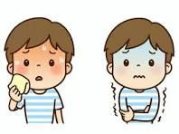
atsui ↔ samui
暑い/寒い — calor/frío (clima)
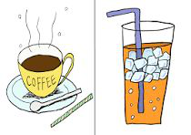
atsui ↔ tsumetai
熱い/冷たい — caliente/frío (cosa)
takai ↔ hikui
高い/低い — alto/bajo
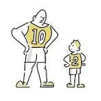
ōkii ↔ chiisai
大きい/小さい — grande/pequeño
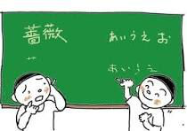
muzukashii ↔ yasashii
難しい/易しい — difícil/fácil
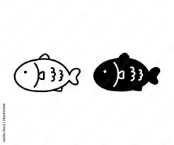
shiroi ↔ kuroi
白い/黒い — blanco/negro
akai ↔ aoi
赤い/青い — rojo/azul
| Kanji | Kana | Romaji | Español |
|---|---|---|---|
| 暑い ↔ 寒い | あつい ↔ さむい | atsui ↔ samui | (hace) calor ↔ (hace) frío — clima |
| 熱い ↔ 冷たい | あつい ↔ つめたい | atsui ↔ tsumetai | caliente ↔ frío — de una cosa |
| 高い ↔ 低い | たかい ↔ ひくい | takai ↔ hikui | alto ↔ bajo (altura) |
| 高い ↔ 安い | たかい ↔ やすい | takai ↔ yasui | caro ↔ barato |
| 大きい ↔ 小さい | おおきい ↔ ちいさい | ōkii ↔ chiisai | grande ↔ pequeño |
| 新しい ↔ 古い | あたらしい ↔ ふるい | atarashii ↔ furui | nuevo ↔ viejo |
| 難しい ↔ 易しい | むずかしい ↔ やさしい | muzukashii ↔ yasashii | difícil ↔ fácil |
| 白い ↔ 黒い | しろい ↔ くろい | shiroi ↔ kuroi | blanco ↔ negro |
| 赤い ↔ 青い | あかい ↔ あおい | akai ↔ aoi | rojo ↔ azul |
| こわい | こわい | kowai | de miedo / que da miedo |
Clase 30/07 más adjetivos い (i) · 〜くないです (~kunai desu) · とても／あまり (totemo / amari)
➕ Más adjetivos い i
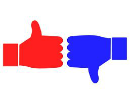
ii / yoi ↔ warui
良い/悪い — bueno/malo
omoshiroi
interesante / divertido
isogashii
ocupado
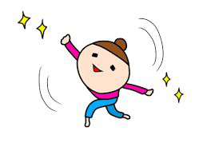
tanoshii
divertido / entretenido
| Kanji | Kana | Romaji | Español |
|---|---|---|---|
| 良い ↔ 悪い | いい（よい）↔ わるい | ii (yoi) ↔ warui | bueno ↔ malo |
| 面白い | おもしろい | omoshiroi | interesante / divertido |
| 忙しい | いそがしい | isogashii | ocupado |
| 楽しい | たのしい | tanoshii | divertido / entretenido |
| 美味しい | おいしい | oishii | rico / delicioso |
💚 Ejemplos afirmativos (い〜です) i ~desu
| Japonés | Romaji | Español |
|---|---|---|
| かばんは おおきいです | Kaban wa ōkii desu | El bolso es grande |
| くつは あたらしいです | Kutsu wa atarashii desu | Los zapatos son nuevos |
| コーヒーは あついです | Kōhī wa atsui desu | El café está caliente |
| コスタリカは あついです | Kosutarika wa atsui desu | En Costa Rica hace calor |
| カメラは たかいです | Kamera wa takai desu | La cámara es cara |
| やまは たかいです | Yama wa takai desu | La montaña es alta |
| スマホは あおいです | Sumaho wa aoi desu | El celular es azul |
| にほんごは むずかしいです | Nihongo wa muzukashii desu | El japonés es difícil |
💔 Ejemplos negativos (い → くないです) i → kunai desu
- たかい → たかくないです (takai → takakunai desu) (no es caro)
- おいしい → おいしくないです (oishii → oishikunai desu) (no es rico)
- ⚠️ Excepción: いい (ii) (bueno) → よくないです (yokunai desu) (no いくないです ikunai desu)
benkyō wa omoshiroku nai desu
Estudiar no es interesante
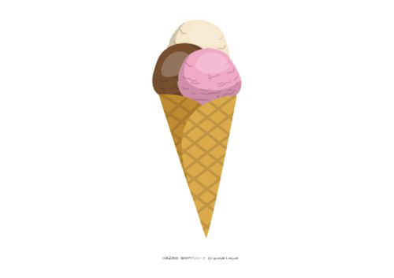
aisu wa atsuku nai desu
El helado no está caliente
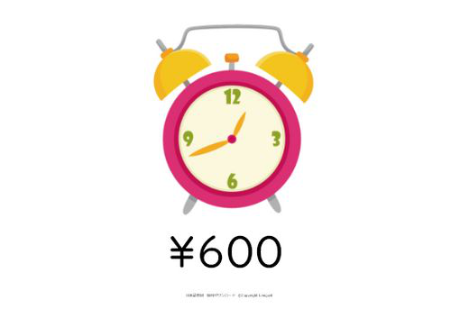
tokei wa takaku nai desu
El reloj no es caro
pātī wa tanoshiku nai desu
La fiesta no es divertida
| Japonés | Romaji | Español |
|---|---|---|
| べんきょうは おもしろくないです | Benkyō wa omoshiroku nai desu | Estudiar no es interesante |
| テストは よくないです | Tesuto wa yoku nai desu | El examen no está bien (いい→よくない) |
| アイスは あつくないです | Aisu wa atsuku nai desu | El helado no está caliente |
| ラーメンは おいしくないです | Rāmen wa oishiku nai desu | El ramen no es rico |
| とけいは たかくないです | Tokei wa takaku nai desu | El reloj no es caro |
| パーティーは たのしくないです | Pātī wa tanoshiku nai desu | La fiesta no es divertida |
| このほんは おもしろくないです | Kono hon wa omoshiroku nai desu | Este libro no es interesante |
| パソコンは あたらしくないです | Pasokon wa atarashiku nai desu | La computadora no es nueva |
📊 とても／あまり con adjetivos い totemo / amari · i
とても (totemo) (muy) — afirmativo
あまり (amari) (no muy) — negativo
| Japonés | Romaji | Español |
|---|---|---|
| かばんは とても おおきいです | Kaban wa totemo ōkii desu | El bolso es muy grande |
| コーヒーは とても あついです | Kōhī wa totemo atsui desu | El café está muy caliente |
| アラスカは とても さむいです | Arasuka wa totemo samui desu | En Alaska hace mucho frío |
| カメラは とても やすいです | Kamera wa totemo yasui desu | La cámara es muy barata |
Clase 06/08 〜ですか？ con adjetivos い (~desu ka? · i)
❓ Preguntar con adjetivos い (〜ですか？) i (~desu ka?)
- Sí → はい、（とても）〔adj〕です (hai, (totemo) 〔adj〕 desu)
- No → いいえ、〔adj〕くないです (iie, 〔adj〕kunai desu) (o el adjetivo contrario)
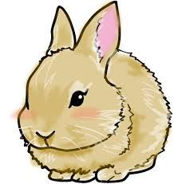
usagi wa ōkii desu ka?
→ いいえ、ちいさいです
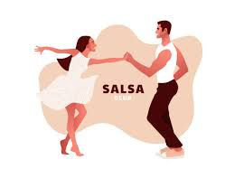
sarusa dansu wa tanoshii desu ka?
→ はい、たのしいです
| Japonés | Romaji | Español |
|---|---|---|
| ワンピースは おもしろいですか？ | Wanpīsu wa omoshiroi desu ka? | ¿One Piece es interesante? |
| ↳ はい、とても おもしろいです | Hai, totemo omoshiroi desu | Sí, es muy interesante |
| うさぎは おおきいですか？ | Usagi wa ōkii desu ka? | ¿El conejo es grande? |
| ↳ いいえ、ちいさいです（おおきくないです） | Iie, chiisai desu (ōkiku nai desu) | No, es pequeño (no es grande) |
| たなかさんは いそがしいですか？ | Tanaka-san wa isogashii desu ka? | ¿Tanaka está ocupado? |
| ↳ はい、いそがしいです | Hai, isogashii desu | Sí, está ocupado |
| きょうは あついですか？ | Kyō wa atsui desu ka? | ¿Hoy hace calor? |
| ↳ いいえ、あまり あつくないです。すずしいです | Iie, amari atsuku nai desu. Suzushii desu | No, no hace mucho calor. Está fresco |
| ルカくんは わるいですか？ | Ruka-kun wa warui desu ka? | ¿Ruka es malo? |
| ↳ いいえ、ルカくんは いいです | Iie, Ruka-kun wa ii desu | No, Ruka es bueno |
Clase 13/08 そして／が (soshite / ga)
🔗 Unir dos adjetivos — そして (y) / が (pero) soshite / ga
- そして (soshite) = y / además → cuando las dos son iguales (＋＋ o −−).
〔adj〕です。そして〔adj〕です。 (〔adj〕 desu. soshite 〔adj〕 desu.) - が (ga) = pero → cuando son opuestas (＋− o −＋).
〔adj〕ですが、〔adj〕です。 (〔adj〕 desu ga, 〔adj〕 desu.)
そして (＋＋ / −−) soshite
が (＋− / −＋) ga
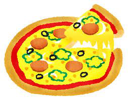
piza wa oishii desu. soshite yasui desu
La pizza es rica y barata
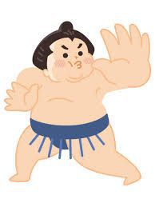
osumōsan wa ōkii desu ga, hayai desu
El luchador de sumo es grande pero rápido
Fuji-san wa yūmei desu. soshite kirei desu
El monte Fuji es famoso y bonito
| Japonés | Romaji | Español |
|---|---|---|
| ワンピースは おもしろいです。そして ゆうめいです | Wanpīsu wa omoshiroi desu. soshite yūmei desu | One Piece es interesante y famoso (＋＋) |
| ラーメンは おいしいです。そして やすいです | Rāmen wa oishii desu. soshite yasui desu | El ramen es rico y barato (＋＋) |
| ルカくんは げんきです。そして かわいいです | Ruka-kun wa genki desu. soshite kawaii desu | Ruka es enérgico y tierno (＋＋) |
| BTSは ゆうめいです。そして ハンサムです | BTS wa yūmei desu. soshite hansamu desu | BTS es famoso y guapo (＋＋) |
| コスタリカのたべものは たかいですが、おいしいです | Kosutarika no tabemono wa takai desu ga, oishii desu | La comida de Costa Rica es cara pero rica (−＋) |
| コスタリカのせいかつは いそがしいですが、たのしいです | Kosutarika no seikatsu wa isogashii desu ga, tanoshii desu | La vida en Costa Rica es ajetreada pero divertida (−＋) |
| 日本語は むずかしいですが、たのしいです | Nihongo wa muzukashii desu ga, tanoshii desu | El japonés es difícil pero divertido (−＋) |
| かばんは ふるいですが、きれいです | Kaban wa furui desu ga, kirei desu | El bolso es viejo pero está lindo (−＋) |
| テニスは むずかしいですが、たのしいです | Tenisu wa muzukashii desu ga, tanoshii desu | El tenis es difícil pero divertido (−＋) |
✅ Chequeo final de gramática — L8 文法チェック bunpō chekku
| Frase (respuesta correcta) | Romaji | Por qué |
|---|---|---|
| きょうとは きれいな まちです | Kyōto wa kirei na machi desu | な-adj + sustantivo → lleva な |
| これは あたらしい ほんです | Kore wa atarashii hon desu | い-adj + sustantivo → va directo (no の) |
| へやは きれいじゃありません | Heya wa kirei ja arimasen | きれい es な-adj → negativo con じゃありません (no くない) |
| かばんは おおきくないです | Kaban wa ōkiku nai desu | い-adj negativo: おおきい→おおきくない |
| ここは あまり べんりじゃありません | Koko wa amari benri ja arimasen | あまり pide forma negativa |
| このケータイは とても いいです | Kono kētai wa totemo ii desu | afirmativo → とても (no あまり) |
| ワットさんは どんな せんせいですか | Watto-san wa donna sensei desu ka | hay sustantivo (せんせい) → どんな |
| しごとは どうですか | Shigoto wa dō desu ka | sin sustantivo → どうですか |
| やまださんは しんせつです。そして、おもしろいです | Yamada-san wa shinsetsu desu. soshite, omoshiroi desu | dos cualidades iguales (＋＋) → そして (no と) |
| 日本のたべものは たかいですが、おいしいです | Nihon no tabemono wa takai desu ga, oishii desu | cualidades opuestas (−＋) → が (pero) |
🎓 ¡Fin de la Lección 8! おつかれさま！ otsukaresama!
Dominás los adjetivos な (na) e い (i): afirmativo/negativo, とても／あまり (totemo / amari), な/い＋sustantivo (na/i + sustantivo), どう／どんな (dō / donna) y unir con そして／が (soshite / ga). 🎉Lección 9 — Gustos y habilidad (〜が すき／きらい) ~ga suki / kirai
Cómo decir qué te gusta o no, y en qué sos bueno o malo. La clave: el objeto lleva la partícula が (ga), y すき・きらい・じょうず・へた (suki · kirai · jōzu · heta) son adjetivos な (na).
🌿 Lo esencial de la L9 — si solo leés esto, alcanza
La L9 habla de vos: lo que te gusta, lo que te sale bien, lo que entendés y lo que tenés. Y al final, cómo explicar por qué. El libro lo resume en 3 frases; la pista que las une es la partícula が (ga). 💪
📘 Las frases modelo del libro — 文型 (bunkei)
Fuente: libro «Libro 3 JLPT N5» (Ninja Gakuen), 第9課 (dai kyū ka), pág. 7. Traducción: pág. 3.
🏋️ Ejercicios del libro — 練習B (renshū B)
✅ = lo hiciste en clase (tocá la fecha para ir). Los demás son buenos para practicar solo.
- B1 〜が すきですか？ (~ga suki desu ka?) — con とても／あまり (totemo / amari)
- B2 どんな 〜が すきですか？ (donna ~ ga suki desu ka?)
- B3 〔persona〕は 〜が じょうずです／じょうずじゃありません (~wa ~ga jōzu desu / jōzu ja arimasen)
- B4 〜が わかりますか？ (~ga wakarimasu ka?) — よく・すこし・だいたい・ぜんぜん (yoku · sukoshi · daitai · zenzen)
- B5 〜が ありますか？ → はい、あります (~ga arimasu ka? → hai, arimasu)
- B6 〔día〕 やくそく／ようじ が あります (yakusoku / yōji ga arimasu) — la agenda
- B7 〔razón〕から、〔resultado〕 (~kara, ~) — じかんが ありませんから、タクシーで いきます (jikan ga arimasen kara, takushī de ikimasu)
- B8 どうして 〜か？ → 〜から (dōshite ~ka? → ~kara)
Fuente: 練習B (renshū B), págs. 10–11.
🎧 Para cazar en anime
Frases de esta lección que vas a escuchar seguido. En el anime a veces suenan más cortas o más informales, pero ya las vas a reconocer.
- 〜が すきです！ (~ga suki desu!) — ¡me gusta ~! (y en una confesión, “me gustás”)
- どうして？ (dōshite?) — ¿por qué?
- 〜から (~kara) — porque ~ (la razón)
- わかりません (wakarimasen) — no entiendo
- じかんが ありません (jikan ga arimasen) — ¡no tengo tiempo!
🧭 Todo lo que vimos en la L9 (del índice de gramática)
Clase 10/09 すき／きらい (suki / kirai) · わかります・あります (wakarimasu · arimasu)
📏 La regla — 〔sustantivo〕が すきです ~ga suki desu
El objeto lleva が (ga), no を (o). Negativo: 〜じゃありません (~ja arimasen), porque son adjetivos な (na)
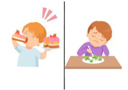
suki desu
me gusta 😍
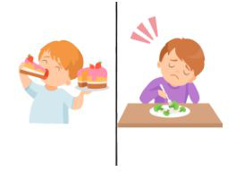
kirai desu
no me gusta 😖
jōzu desu
lo hace bien / es hábil 👏
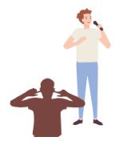
heta desu
lo hace mal / es torpe 🙈
💚 Ejemplos — 〜が すき／きらい ~ga suki / kirai
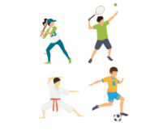
supōtsu ga suki desu
Me gustan los deportes
karaoke ga suki desu
Me gusta el karaoke
| Japonés | Romaji | Español |
|---|---|---|
| スポーツが すきです | Supōtsu ga suki desu | Me gustan los deportes |
| やきゅうが きらいです | Yakyū ga kirai desu | No me gusta el béisbol |
| ダンスが すきじゃありません | Dansu ga suki ja arimasen | No me gusta bailar |
| おんがくが とても すきです | Ongaku ga totemo suki desu | Me gusta mucho la música |
| りょこうが すきです | Ryokō ga suki desu | Me gusta viajar |
| すしが すきです | Sushi ga suki desu | Me gusta el sushi |
| カラオケが すきです | Karaoke ga suki desu | Me gusta el karaoke |
| ビールが すきじゃありません | Bīru ga suki ja arimasen | No me gusta la cerveza |
| アイスコーヒーが すきです | Aisu kōhī ga suki desu | Me gusta el café helado |
| あおが すきです | Ao ga suki desu | Me gusta el (color) azul |
| こわいえいがが きらいです | Kowai eiga ga kirai desu | No me gustan las películas de terror |
| おさけが すきじゃありません | Osake ga suki ja arimasen | No me gusta el alcohol / sake |
🔤 Verbos nuevos — わかります・あります wakarimasu · arimasu
- わかります wakarimasu = entender → 日本語が わかります (Nihongo ga wakarimasu) = entiendo japonés
- あります arimasu = haber / tener → じかんが あります (jikan ga arimasu) = tengo tiempo
Clase 17/09 にがて (nigate) · とても／あまり (totemo / amari) · すきですか？ (suki desu ka?) · どんな〜？ (donna ~?)
😣 Lo que no se te da — 〜が にがてです ~ga nigate desu ★ 苦手 nigate
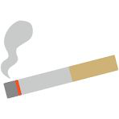
tabako ga nigate desu
No soporto el cigarrillo 🚬
benkyō ga nigate desu
Estudiar no es lo mío 📚
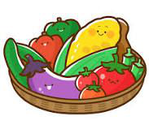
yasai ga nigate desu
No me llevo bien con las verduras 🥦
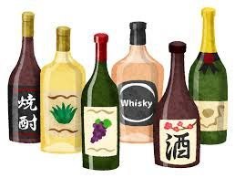
osake ga nigate desu
No me sienta el alcohol 🍶
| Japonés | Romaji | Español |
|---|---|---|
| たばこが にがてです | Tabako ga nigate desu | No soporto el cigarrillo |
| べんきょうが にがてです | Benkyō ga nigate desu | Estudiar no es lo mío |
| やさいが にがてです | Yasai ga nigate desu | No me gustan las verduras |
| おさけが にがてです | Osake ga nigate desu | No me cae bien el alcohol |
🌡️ ¿Cuánto te gusta? — escala con とても／あまり totemo / amari
| Japonés | Romaji | Español | |
|---|---|---|---|
| 😍 Positiva | とても すきです | totemo suki desu | me gusta mucho |
| 🙂 Positiva | すきです | suki desu | me gusta |
| 😐 Negativa | あまり すきじゃありません | amari suki ja arimasen | no me gusta mucho |
| 😖 Negativa | すきじゃありません ≈ きらいです | suki ja arimasen ≈ kirai desu | no me gusta (≈ me disgusta) |
🧪 Práctica — 〜が すきです／すきじゃありません ~ga suki desu / suki ja arimasen
supōtsu ga totemo suki desu
Me gustan mucho los deportes
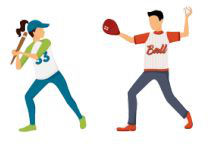
yakyū ga amari suki ja arimasen
No me gusta mucho el béisbol
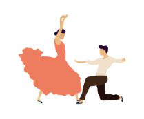
dansu ga suki ja arimasen
No me gusta bailar
ongaku ga totemo suki desu
Me gusta mucho la música
ryokō ga totemo suki desu
Me gusta mucho viajar
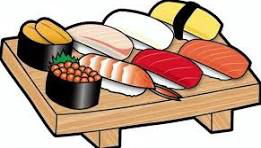
osushi ga totemo suki desu
Me gusta mucho el sushi
karaoke ga suki desu
Me gusta el karaoke
bīru ga amari kirai ja arimasen
La cerveza no me disgusta tanto
❓ Preguntarle a otra persona — 〜が すきですか？ ~ga suki desu ka?
kēki ga suki desu ka?
¿Te gusta el pastel? 🍰 / 🥦
A: 〔S〕 ga suki desu ka?
B：〜。Aさんは？
B: ~. A-san wa?
(¿y vos, A?)
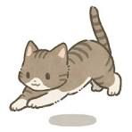
neko
gato
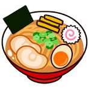
rāmen
ramen
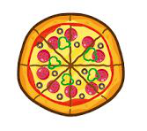
piza
pizza
benkyō
estudio
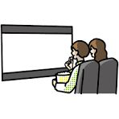
eiga
película
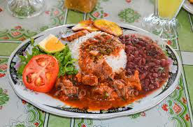
Kosutarika no ryōri
comida costarricense
| Japonés | Romaji | Español |
|---|---|---|
| ねこが すきですか？ | Neko ga suki desu ka? | ¿Te gustan los gatos? |
| ↳ いいえ。あまり すきじゃありません | Iie. Amari suki ja arimasen | No. No me gustan mucho |
| ラーメンが すきですか？ | Rāmen ga suki desu ka? | ¿Te gusta el ramen? |
| ↳ はい。とても すきです | Hai. Totemo suki desu | Sí. Me gusta mucho |
| ピザが すきですか？ | Piza ga suki desu ka? | ¿Te gusta la pizza? |
| ↳ はい。とても すきです | Hai. Totemo suki desu | Sí. Me gusta mucho |
| べんきょうが すきですか？ | Benkyō ga suki desu ka? | ¿Te gusta estudiar? |
| ↳ いいえ。きらいです | Iie. Kirai desu | No. No me gusta |
| えいがが すきですか？ | Eiga ga suki desu ka? | ¿Te gustan las películas? |
| ↳ はい。とても すきです | Hai. Totemo suki desu | Sí. Me gustan mucho |
| コスタリカのりょうりが すきですか？ | Kosutarika no ryōri ga suki desu ka? | ¿Te gusta la comida costarricense? |
| ↳ はい。とても すきです | Hai. Totemo suki desu | Sí. Me gusta mucho |
❔ ¿Qué tipo de ~ te gusta? — どんな〔sustantivo〕が すきですか？ donna ~ ga suki desu ka?
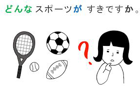
donna supōtsu ga suki desu ka?
¿Qué deportes te gustan?
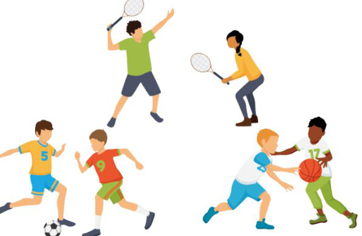
donna supōtsu?
¿qué deporte?
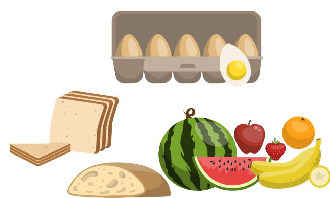
donna tabemono?
¿qué comida?
donna eiga?
¿qué películas?
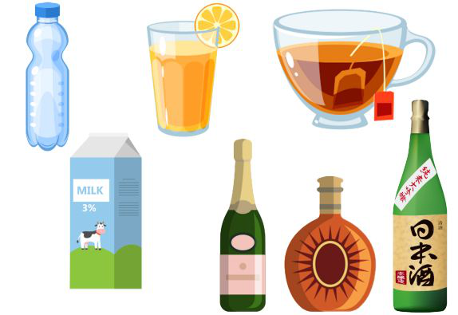
donna nomimono?
¿qué bebidas?
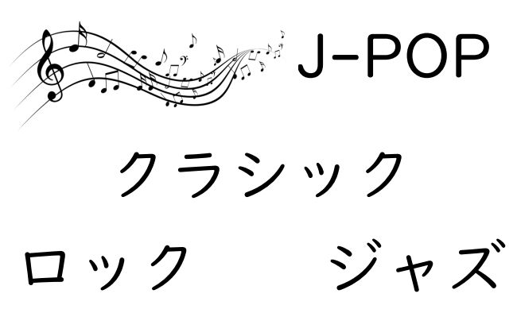
donna ongaku?
→ J-POP・クラシック・ロック・ジャズ
Jei-poppu · kurashikku · rokku · jazu
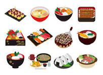
Nihon no tabemono
comida japonesa
| Japonés | Romaji | Español |
|---|---|---|
| どんな スポーツが すきですか？ | Donna supōtsu ga suki desu ka? | ¿Qué deportes te gustan? |
| ↳ テニスが すきです | Tenisu ga suki desu | Me gusta el tenis |
| どんな たべものが すきですか？ | Donna tabemono ga suki desu ka? | ¿Qué comida te gusta? |
| ↳ 日本の たべものが すきです | Nihon no tabemono ga suki desu | Me gusta la comida japonesa |
| どんな えいがが すきですか？ | Donna eiga ga suki desu ka? | ¿Qué películas te gustan? |
| ↳ コメディーえいがが すきです | Komedī eiga ga suki desu | Me gustan las comedias |
| どんな のみものが すきですか？ | Donna nomimono ga suki desu ka? | ¿Qué bebidas te gustan? |
| ↳ ちゃが すきです | Cha ga suki desu | Me gusta el té |
| どんな おんがくが すきですか？ | Donna ongaku ga suki desu ka? | ¿Qué música te gusta? |
| ↳ J-POPが すきです | Jei-poppu ga suki desu | Me gusta el J-pop |
| どんな りょうりが すきですか？ | Donna ryōri ga suki desu ka? | ¿Qué (tipo de) cocina te gusta? |
| ↳ 日本の りょうりが すきです | Nihon no ryōri ga suki desu | Me gusta la cocina japonesa |
Clase 24/09 じょうず／へた (jōzu / heta) · 〜こと (~koto) · わかります (wakarimasu)
👏 Habilidad — 〜が じょうず／へたです ~ga jōzu / heta desu
🧪 Práctica — 〜が じょうず／へたです ~ga jōzu / heta desu
karaoke ga heta desu
Soy malo en el karaoke
ryōri ga jōzu desu
Cocina bien
dansu ga totemo heta desu
Baila muy mal
yakyū ga heta desu
Es malo en béisbol
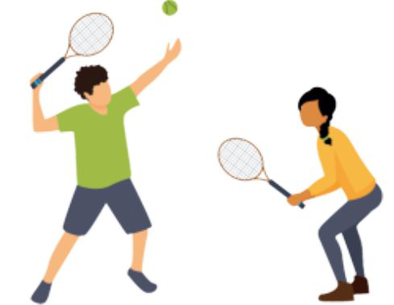
tenisu ga amari jōzu ja arimasen
No es muy bueno en tenis
e ga jōzu desu
Dibuja / pinta bien
| Japonés | Romaji | Español | |
|---|---|---|---|
| ❤️❤️ Positiva | とても じょうずです | totemo jōzu desu | lo hace muy bien |
| ❤️ Positiva | じょうずです | jōzu desu | lo hace bien |
| 🔺 Negativa | あまり じょうずじゃありません | amari jōzu ja arimasen | no lo hace muy bien |
| ✖️ Negativa | じょうずじゃありません ≈ へたです | jōzu ja arimasen ≈ heta desu | no lo hace bien (≈ lo hace mal) |
🧑🤝🧑 ¿Quién es bueno en qué? — 〔persona〕は 〔cosa〕が じょうずです ~wa ~ga jōzu desu
| Japonés | Romaji | Español |
|---|---|---|
| タニアさんは うたが とても じょうずです | Tania-san wa uta ga totemo jōzu desu | Tania canta muy bien |
| アブラムさんは テニスが とても じょうずです | Aburamu-san wa tenisu ga totemo jōzu desu | Avram juega muy bien al tenis |
| わたしは サッカーが へたです | Watashi wa sakkā ga heta desu | Yo soy malo en fútbol |
| るかくんは はしることが とても じょうずです | Ruka-kun wa hashiru koto ga totemo jōzu desu | Luka corre muy bien |
✨ Convertir un verbo en sustantivo — 〔verbo〕＋こと ~koto
| Forma ます | Forma diccionario ＋ こと | Romaji | Español |
|---|---|---|---|
| ほんを よみます | ほんを よむこと | hon o yomimasu → hon o yomu koto | leer libros |
| たべます | たべること | tabemasu → taberu koto | comer |
| うたいます | うたうこと | utaimasu → utau koto | cantar |
| はしります | はしること | hashirimasu → hashiru koto | correr |
💡 Entender — 〜が わかります／わかりません ~ga wakarimasu / wakarimasen
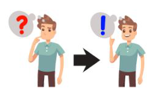
wakarimasen → wakarimasu
no entiendo ❓ → ¡entiendo! ❗
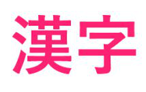
kanji ga wakarimasen
No entiendo los kanji
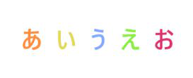
hiragana ga wakarimasu
Entiendo hiragana
katakana ga daitai wakarimasu
Entiendo katakana más o menos
rōmaji ga wakarimasu
Entiendo el romaji
Chūgokugo ga zenzen wakarimasen
No entiendo nada de chino
Kankokugo ga sukoshi wakarimasu
Entiendo un poco de coreano
📶 ¿Cuánto entendés? — よく・だいたい・すこし・あまり・ぜんぜん yoku · daitai · sukoshi · amari · zenzen
| Japonés | Romaji | Español | |
|---|---|---|---|
| ⭕⭕ Positiva | よく わかります | yoku wakarimasu | entiendo bien |
| ⭕ Positiva | わかります | wakarimasu | entiendo |
| 🔺 Positiva | だいたい わかります | daitai wakarimasu | entiendo más o menos / casi todo |
| 🔺🔺 Positiva | すこし わかります | sukoshi wakarimasu | entiendo un poco |
| ✖️ Negativa | あまり わかりません | amari wakarimasen | no entiendo mucho |
| ✖️✖️ Negativa | ぜんぜん わかりません | zenzen wakarimasen | no entiendo nada |
Clase 01/10 わかりますか？ (wakarimasu ka?) · あります (arimasu) · たくさん (takusan) · じかん／ようじ／やくそく (jikan / yōji / yakusoku)
❓ Preguntar — 〜が わかりますか？ ~ga wakarimasu ka?
| Japonés | Romaji | Español |
|---|---|---|
| かんじが わかりますか？ | Kanji ga wakarimasu ka? | ¿Entendés kanji? |
| ↳ ぜんぜん わかりません | Zenzen wakarimasen | No entiendo nada |
| ひらがなが わかりますか？ | Hiragana ga wakarimasu ka? | ¿Entendés hiragana? |
| ↳ だいたい わかります | Daitai wakarimasu | Entiendo más o menos |
| カタカナが わかりますか？ | Katakana ga wakarimasu ka? | ¿Entendés katakana? |
| ↳ わかります | Wakarimasu | Sí, entiendo |
| ローマじが わかりますか？ | Rōmaji ga wakarimasu ka? | ¿Entendés romaji? |
| ↳ よく わかります | Yoku wakarimasu | Entiendo bien |
| ちゅうごくごが わかりますか？ | Chūgokugo ga wakarimasu ka? | ¿Entendés chino? |
| ↳ ぜんぜん わかりません | Zenzen wakarimasen | No entiendo nada |
| かんこくごが わかりますか？ | Kankokugo ga wakarimasu ka? | ¿Entendés coreano? |
| ↳ ぜんぜん わかりません | Zenzen wakarimasen | No entiendo nada |
🏠 Tener — 〜が あります／ありません ~ga arimasu / arimasen
ōkii ie ga arimasu
Tengo una casa grande
takai tokei ga arimasen
No tengo un reloj caro
atarashii kuruma ga arimasen
No tengo un auto nuevo
ii pasokon ga arimasu
Tengo una buena computadora
takusan okane ga arimasen
No tengo mucho dinero
Las imágenes traen el adjetivo escrito: 大きい (ōkii), 高い (takai), 新しい (atarashii), いい (ii), たくさん (takusan).
| Japonés | Romaji | Español |
|---|---|---|
| おおきい いえが あります | Ōkii ie ga arimasu | Tengo una casa grande |
| たかい とけいが ありません | Takai tokei ga arimasen | No tengo un reloj caro |
| あたらしい くるまが ありません | Atarashii kuruma ga arimasen | No tengo un auto nuevo |
| いい パソコンが あります | Ii pasokon ga arimasu | Tengo una buena computadora |
| たくさん おかねが ありません | Takusan okane ga arimasen | No tengo mucho dinero |
| ☆ たくさん しごとが あります | Takusan shigoto ga arimasu | Tengo mucho trabajo |
| ☆ ふるい スマホが ありません | Furui sumaho ga arimasen | No tengo un celular viejo |
📦 ¿Cuánto tenés? — たくさん・すこし・あまり・ぜんぜん takusan · sukoshi · amari · zenzen
| Japonés | Romaji | Español | |
|---|---|---|---|
| ❤️❤️ Positiva | たくさん あります | takusan arimasu | tengo mucho / hay mucho |
| ❤️ Positiva | あります | arimasu | tengo / hay |
| 🔺 Positiva | すこし あります | sukoshi arimasu | tengo un poco |
| ✖️ Negativa | あまり ありません | amari arimasen | no tengo mucho |
| ✖️✖️ Negativa | ぜんぜん ありません | zenzen arimasen | no tengo nada |
🧪 Práctica — 〜が （たくさん／すこし／あまり） あります ~ga (takusan / sukoshi / amari) arimasu
| Japonés | Romaji | Español |
|---|---|---|
| いえが あります | Ie ga arimasu | Tengo casa |
| とけいが あります | Tokei ga arimasu | Tengo reloj |
| くるまが あります | Kuruma ga arimasu | Tengo auto |
| パソコンが たくさん あります | Pasokon ga takusan arimasu | Tengo muchas computadoras |
| おかねが あまり ありません | Okane ga amari arimasen | No tengo mucho dinero |
| ☆ たまごが たくさん あります | Tamago ga takusan arimasu | Tengo muchos huevos |
| ☆ フルーツが すこし あります | Furūtsu ga sukoshi arimasu | Tengo un poco de fruta |
| ☆ やさいが あまり ありません | Yasai ga amari arimasen | No tengo muchas verduras |
| ☆ おこめが たくさん あります | Okome ga takusan arimasu | Tengo mucho arroz |
| ☆ BTSの グッズが たくさん あります | BTS no guzzu ga takusan arimasu | Tengo muchas cosas de BTS |
⏰ Tiempo, asuntos y compromisos — じかん／ようじ／やくそく が あります jikan / yōji / yakusoku ga arimasu
jikan
tiempo
yōji
asunto / algo que hacer
yakusoku
compromiso / cita / promesa
🕒 じかんが あります ＝ ひまです jikan ga arimasu = hima desu
jikan ga arimasu
Tengo tiempo
hima desu
Estoy libre / no tengo nada que hacer
🤙 ともだちと やくそくが あります tomodachi to yakusoku ga arimasu
📮 ようじが あります yōji ga arimasu
（びょういんに いきます。ようじが あります）
byōin ni ikimasu. yōji ga arimasu
Voy al hospital. Tengo algo que hacer
| Japonés | Romaji | Español |
|---|---|---|
| じかんが あります ＝ ひまです | Jikan ga arimasu = hima desu | Tengo tiempo = estoy libre |
| ともだちと やくそくが あります | Tomodachi to yakusoku ga arimasu | Tengo un compromiso con un amigo |
| ようじが あります | Yōji ga arimasu | Tengo algo que hacer |
| ☆ しゅうまつ ようじが あります | Shūmatsu yōji ga arimasu | El fin de semana tengo cosas que hacer |
| ☆ しゅうまつ テニスが あります | Shūmatsu tenisu ga arimasu | El fin de semana tengo tenis |
| ☆ しゅうまつ じかんが たくさん あります | Shūmatsu jikan ga takusan arimasu | El fin de semana tengo mucho tiempo |
Clase 08/10 ありますか？ (arimasu ka?) · わたしも (watashi mo)
❓ Preguntar — 〜が ありますか？ ~ga arimasu ka?
A: Ueda-san wa okane ga arimasu ka.
B：はい、たくさん あります。
B: Hai, takusan arimasu.
¿Ueda tiene dinero? — Sí, mucho 😄
A: Shimoda-san wa okane ga arimasu ka.
B：いいえ、あまり ありません。
B: Iie, amari arimasen.
¿Shimoda tiene dinero? — No, no mucho 😞
🧪 Práctica — 〜が ありますか？ ~ga arimasu ka?
Hoja de ejercicios de 日本語あれこれ (Nihongo Arekore) · nihongo-arekore.com
Pasokon ga arimasu ka?
A：はい。パソコンが あります
Hai. Pasokon ga arimasu
¿Tenés computadora? — Sí, tengo
Okane ga arimasu ka?
A：いいえ。おかねが あまり ありません
Iie. Okane ga amari arimasen
¿Tenés dinero? — No, no tengo mucho
Kuruma ga arimasu ka?
A：はい。くるまが あります
Hai. Kuruma ga arimasu
¿Tenés auto? — Sí, tengo
Sumaho ga arimasu ka?
A：はい。スマホが あります
Hai. Sumaho ga arimasu
¿Tenés celular? — Sí, tengo
Fakkusu ga arimasu ka?
A：いいえ。FAXが ありません
Iie. Fakkusu ga arimasen
¿Tenés fax? — No, no tengo
Pureisutēshon ga arimasu ka?
A：いいえ。プレイステーションが ありません
Iie. Pureisutēshon ga arimasen
¿Tenés PlayStation? — No, no tengo
Tokei ga arimasu ka?
A：いいえ。とけいが ありません
Iie. Tokei ga arimasen
¿Tenés reloj? — No, no tengo
Jisho ga arimasu ka?
A：いいえ。じしょが ありません
Iie. Jisho ga arimasen
¿Tenés diccionario? — No, no tengo
Ashita jikan ga arimasu ka?
A：はい。たくさん あります
Hai. Takusan arimasu
¿Mañana tenés tiempo? — Sí, mucho
Raishū yōji ga arimasu ka?
A：はい。ようじが あります
Hai. Yōji ga arimasu
¿La semana que viene tenés cosas que hacer? — Sí, tengo
Shūmatsu yakusoku ga arimasu ka?
A：いいえ。やくそくが ありません
Iie. Yakusoku ga arimasen
¿El fin de semana tenés algún compromiso? — No, no tengo
Rajio ga arimasu ka?
A：いいえ。ラジオが ありません
Iie. Rajio ga arimasen
¿Tenés radio? — No, no tengo
Kamera ga arimasu ka?
A：はい。カメラが あります
Hai. Kamera ga arimasu
¿Tenés cámara? — Sí, tengo
Nekutai ga arimasu ka?
A：はい。ネクタイが すこし あります
Hai. Nekutai ga sukoshi arimasu
¿Tenés corbatas? — Sí, algunas
🗣️ Conversación — ¿tenés tiempo hoy? kyō jikan ga arimasu ka?
A: B-san wa kyō jikan ga arimasu ka?
B：はい／いいえ、〜。Aさんは？
B: hai / iie, ~. A-san wa?
A：わたしは 〜。
A: watashi wa ~.
shigoto
trabajo
yōji
algo que hacer
yakusoku
compromiso
shukudai
tarea
| Japonés | Romaji | Español |
|---|---|---|
| A：Bさんは きょう じかんが ありますか？ | B-san wa kyō jikan ga arimasu ka? | ¿Tenés tiempo hoy? |
| ① B：はい。あります。Aさんは？ | Hai. Arimasu. A-san wa? | Sí, tengo. ¿Y vos? |
| ↳ A：しごとが あります | Shigoto ga arimasu | Yo tengo trabajo |
| ② B：いいえ。ようじが あります。Aさんは？ | Iie. Yōji ga arimasu. A-san wa? | No, tengo algo que hacer. ¿Y vos? |
| ↳ A：わたしも ようじが あります | Watashi mo yōji ga arimasu | Yo también tengo algo que hacer |
| ③ B：いいえ。じかんが ありません。Aさんは？ | Iie. Jikan ga arimasen. A-san wa? | No, no tengo tiempo. ¿Y vos? |
| ↳ A：わたしは やくそくが あります | Watashi wa yakusoku ga arimasu | Yo tengo un compromiso |
| ④ B：はい。じかんが あります。Aさんは？ | Hai. Jikan ga arimasu. A-san wa? | Sí, tengo tiempo. ¿Y vos? |
| ↳ A：わたしは しゅくだいが あります | Watashi wa shukudai ga arimasu | Yo tengo tarea |
Clase 15/10 ¿Por qué? どうして／から (dōshite / kara) · B3 · variaciones del diálogo
🧪 Ejercicio B3 — 〜が じょうず／へたです ~ga jōzu / heta desu
| Japonés | Romaji | Español |
|---|---|---|
| 1) マリアさんは ダンスが じょうずです | Maria-san wa dansu ga jōzu desu | María baila bien |
| 2) まつもとさんは テニスが へたです | Matsumoto-san wa tenisu ga heta desu | Matsumoto juega mal al tenis |
| 3) やまださんは りょうりが あまり じょうずじゃありません | Yamada-san wa ryōri ga amari jōzu ja arimasen | Yamada no cocina muy bien |
| 4) カリナさんは えが とても じょうずです | Karina-san wa e ga totemo jōzu desu | Karina dibuja muy bien |
🤔 ¿Por qué? — どうして 〜か？ → 〜から dōshite ~ka? → ~kara
dōshite desu ka?
¿Por qué?
〔razón〕 kara
¿la razón? ¡le encanta el sushi! 🍣
🧪 Práctica — どうして 〜か？ dōshite ~ka?
Respondé cada pregunta con 〔razón〕から (〔razón〕 kara).
| Japonés | Romaji | Español |
|---|---|---|
| ① どうして スパイダーマンを みましたか？ | Dōshite Supaidāman o mimashita ka? | ¿Por qué viste Spider-Man? |
| ② どうして ラーメンが すきですか？ | Dōshite rāmen ga suki desu ka? | ¿Por qué te gusta el ramen? |
| ③ どうして BTSが すきですか？ | Dōshite BTS ga suki desu ka? | ¿Por qué te gusta BTS? |
| ④ どうして ガジョピントを たべましたか？ | Dōshite gajopinto o tabemashita ka? | ¿Por qué comiste gallo pinto? |
| ⑤ どうして テニスを しましたか？ | Dōshite tenisu o shimashita ka? | ¿Por qué jugaste al tenis? |
| ⑥ どうして メキシコへ いきましたか？ | Dōshite Mekishiko e ikimashita ka? | ¿Por qué fuiste a México? |
| ⑦ どうして にほんごを べんきょうしますか？ | Dōshite Nihongo o benkyō shimasu ka? | ¿Por qué estudiás japonés? |
🗣️ Conversación — gusto, tipo y razón suki · donna · dōshite
Une las tres preguntas de L9: すきですか？ (suki desu ka?) → どんな〜？ (donna ~?) → どうして？ (dōshite?)
anime
anime
| Japonés | Romaji | Español |
|---|---|---|
| A：アニメが すきですか？ | Anime ga suki desu ka? | ¿Te gusta el anime? |
| B：すきです | Suki desu | Sí, me gusta |
| A：どんな アニメが すきですか？ | Donna anime ga suki desu ka? | ¿Qué tipo de anime te gusta? |
| B：〔＿＿〕の アニメが すきです | 〔＿＿〕 no anime ga suki desu | Me gusta el anime de ~ |
| A：どうして すきですか？ | Dōshite suki desu ka? | ¿Por qué te gusta? |
| B：〔razón〕から | 〔razón〕 kara | Porque ~ |
Nihon ryōri
comida japonesa
gajopinto
gallo pinto
| Japonés | Romaji | Español |
|---|---|---|
| A：にほん りょうりが すきですか？ | Nihon ryōri ga suki desu ka? | ¿Te gusta la comida japonesa? |
| B：〔＿＿〕 | 〔＿＿〕 | (respuesta) |
| A：どんな にほん りょうりが すきですか？ | Donna Nihon ryōri ga suki desu ka? | ¿Qué comida japonesa te gusta? |
| B：〔＿＿〕が すきです | 〔＿＿〕 ga suki desu | Me gusta ~ |
| A：どうして すきですか？ | Dōshite suki desu ka? | ¿Por qué te gusta? |
| B：〔razón〕から | 〔razón〕 kara | Porque ~ |
🔁 Variaciones del diálogo suki · donna · dōshite
El mismo molde que el de anime, con otros temas. Cambiá el género y la razón para armar tus propias respuestas.
🎬 Películas — えいが eiga
| Japonés | Romaji | Español |
|---|---|---|
| A：えいがが すきですか。 | Eiga ga suki desu ka. | ¿Te gustan las películas? |
| B：すきです。 | Suki desu. | Me gustan. |
| A：どんな えいがが すきですか。 | Donna eiga ga suki desu ka. | ¿Qué películas te gustan? |
| B：アクションえいがが すきです。 | Akushon eiga ga suki desu. | Me gustan las de acción. |
| A：どうして すきですか。 | Dōshite suki desu ka. | ¿Por qué te gustan? |
| B：おもしろいですから。 | Omoshiroi desu kara. | Porque son interesantes. |
| Variantes para el género | ||
| コメディーえいがが すきです。 | Komedī eiga ga suki desu. | las de comedia |
| ホラーえいがが すきです。 | Horā eiga ga suki desu. | las de terror |
| アメリカの えいがが すきです。 | Amerika no eiga ga suki desu. | las americanas |
| にほんの えいがが すきです。 | Nihon no eiga ga suki desu. | las japonesas |
| Variantes para la razón | ||
| たのしいですから。 | Tanoshii desu kara. | Porque son divertidas. |
| ストーリー が おもしろいですから。 | Sutōrī ga omoshiroi desu kara. | Porque las historias son interesantes. |
| ドキドキしますから。 | Dokidoki shimasu kara. | Porque emocionan (ドキドキ = el “pum-pum” del corazón 💓) |
🎵 Música — おんがく ongaku
| Japonés | Romaji | Español |
|---|---|---|
| A：おんがく が すきですか。 | Ongaku ga suki desu ka. | ¿Te gusta la música? |
| B：すきです。 | Suki desu. | Me gusta. |
| A：どんな おんがく が すきですか。 | Donna ongaku ga suki desu ka. | ¿Qué música te gusta? |
| B：ロック が すきです。 | Rokku ga suki desu. | Me gusta el rock. |
| A：どうして すきですか。 | Dōshite suki desu ka. | ¿Por qué te gusta? |
| B：わくわくしますから。 | Wakuwaku shimasu kara. | Porque me emociona ✨ |
| Variantes para el género | ||
| ジャズ が すきです。 | Jazu ga suki desu. | jazz |
| J-POP が すきです。 | Jei-poppu ga suki desu. | J-pop |
| クラシック が すきです。 | Kurashikku ga suki desu. | música clásica |
| ラテンおんがく が すきです。 | Raten ongaku ga suki desu. | música latina 🇨🇷 |
| Variantes para la razón | ||
| たのしいですから。 | Tanoshii desu kara. | Porque es divertida. |
| きれいですから。 | Kirei desu kara. | Porque es hermosa (ideal para la clásica). |
| リズム が いいですから。 | Rizumu ga ii desu kara. | Porque tiene buen ritmo (ideal para la latina o el rock). |
⚽ Deportes — スポーツ supōtsu
| Japonés | Romaji | Español |
|---|---|---|
| A：スポーツ が すきですか。 | Supōtsu ga suki desu ka. | ¿Te gustan los deportes? |
| B：すきです。 | Suki desu. | Me gustan. |
| A：どんな スポーツ が すきですか。 | Donna supōtsu ga suki desu ka. | ¿Qué deporte te gusta? |
| B：テニス が すきです。 | Tenisu ga suki desu. | Me gusta el tenis. |
| A：どうして すきですか。 | Dōshite suki desu ka. | ¿Por qué te gusta? |
| B：たのしいですから。 | Tanoshii desu kara. | Porque es divertido. |
| Variantes para el deporte | ||
| サッカー が すきです。 | Sakkā ga suki desu. | fútbol ⚽ |
| やきゅう が すきです。 | Yakyū ga suki desu. | béisbol ⚾ |
| バスケットボール が すきです。 | Basukettobōru ga suki desu. | básquet 🏀 |
| すいえい が すきです。 | Suiei ga suki desu. | natación 🏊 |
| Variantes para la razón | ||
| わくわくしますから。 | Wakuwaku shimasu kara. | Porque me emociona. |
| むずかしいですが、おもしろいですから。 | Muzukashii desu ga, omoshiroi desu kara. | Porque es difícil pero interesante (が de contraste). |
| けんこうに いいですから。 | Kenkō ni ii desu kara. | Porque es bueno para la salud. |
🌮 Comida mexicana — メキシコりょうり Mekishiko ryōri
| Japonés | Romaji | Español |
|---|---|---|
| A：メキシコりょうり が すきですか。 | Mekishiko ryōri ga suki desu ka. | ¿Te gusta la comida mexicana? |
| B：すきです。 | Suki desu. | Me gusta. |
| A：どんな メキシコりょうり が すきですか。 | Donna Mekishiko ryōri ga suki desu ka. | ¿Qué comida mexicana te gusta? |
| B：タコス が すきです。 | Takosu ga suki desu. | Me gustan los tacos. |
| A：どうして すきですか。 | Dōshite suki desu ka. | ¿Por qué te gustan? |
| B：おいしいですから。 | Oishii desu kara. | Porque son ricos. |
| Variantes para el platillo | ||
| ブリトー が すきです。 | Buritō ga suki desu. | burrito |
| ケサディージャ が すきです。 | Kesadīja ga suki desu. | quesadilla |
| ナチョス が すきです。 | Nachosu ga suki desu. | nachos |
| ワカモレ が すきです。 | Wakamore ga suki desu. | guacamole 🥑 |
| Variantes para la razón | ||
| からいです。そして、おいしいですから。 | Karai desu. Soshite, oishii desu kara. | Es picante. Y además, porque es rica 🌶️ |
| からいですが、おいしいですから。 | Karai desu ga, oishii desu kara. | Porque pica, pero es rica. |
Clase 22/10 B4 · 〔razón〕から、〔resultado〕 (〔razón〕 kara, 〔resultado〕) · práctica どうして？／〜から (dōshite? / ~kara)
🧪 Ejercicio B4 — 〜が わかりますか？ ~ga wakarimasu ka?
Repaso de la escala よく・だいたい・あまり・ぜんぜん (yoku · daitai · amari · zenzen) con idiomas y escritura.
| Japonés | Romaji | Español |
|---|---|---|
| 1) シュミットさんは えいごが わかりますか？ | Shumitto-san wa Eigo ga wakarimasu ka? | ¿Schmidt entiende inglés? |
| ↳ はい。よく わかります | Hai. Yoku wakarimasu | Sí. Entiende bien |
| 2) テレーザちゃんは かんじが わかりますか？ | Terēza-chan wa kanji ga wakarimasu ka? | ¿Teresa entiende kanji? |
| ↳ いいえ。あまり わかりません | Iie. Amari wakarimasen | No. No entiende mucho |
| 3) サントスさんは 日本語が わかりますか？ | Santosu-san wa Nihongo ga wakarimasu ka? | ¿Santos entiende japonés? |
| ↳ はい。だいたい わかります | Hai. Daitai wakarimasu | Sí. Entiende más o menos |
| 4) やまださんの おくさんは フランスごが わかりますか？ | Yamada-san no okusan wa Furansugo ga wakarimasu ka? | ¿La esposa de Yamada entiende francés? |
| ↳ いいえ。ぜんぜん わかりません | Iie. Zenzen wakarimasen | No. No entiende nada |
🔗 La razón va primero — 〔razón〕から、〔resultado〕 〔razón〕 kara, 〔resultado〕
La clase pasada から (kara) cerraba la respuesta. Ahora se juntan razón y resultado en una sola oración: primero la razón, después から (kara), y al final lo que pasa.
〔razón〕 kara 〔resultado〕
le gusta el sushi → lo come
🚕 Sin tiempo → en taxi jikan ga arimasen kara
jikan ga arimasen
no tengo tiempo
takushī de
en taxi
kaisha e ikimasu
voy a la empresa
| Japonés | Romaji | Español |
|---|---|---|
| じかんが ありませんから、タクシーで かいしゃへ いきます | Jikan ga arimasen kara, takushī de kaisha e ikimasu | Como no tengo tiempo, voy a la oficina en taxi |
🎂 Cumpleaños de mamá → compré una torta haha no tanjōbi desu kara
tanjōbi
cumpleaños
haha
mi mamá
kēki o kaimashita
compré una torta
| Japonés | Romaji | Español |
|---|---|---|
| どうして ケーキを かいましたか？ | Dōshite kēki o kaimashita ka? | ¿Por qué compraste una torta? |
| ↳ ははの たんじょうびですから、ケーキを かいました | Haha no tanjōbi desu kara, kēki o kaimashita | Como es el cumpleaños de mi mamá, compré una torta |
⏰ Domingo es descanso → me levanto a las 8 nichiyōbi wa yasumi desu kara
shigoto
trabajo (de lunes a sábado)
hachi-ji
las 8
okimasu
levantarse
| Japonés | Romaji | Español |
|---|---|---|
| どうして にちようび はちじに おきますか？ | Dōshite nichiyōbi hachi-ji ni okimasu ka? | ¿Por qué el domingo te levantás a las 8? |
| ↳ にちようびは やすみですから、８じに おきます | Nichiyōbi wa yasumi desu kara, hachi-ji ni okimasu | Como el domingo es descanso, me levanto a las 8 |
🧪 Práctica — どうして？／〜から (hoja A) dōshite? / ~kara
Ejemplo de la hoja: パーティーへ きませんでした。 (pātī e kimasen deshita.) + しごとが たくさん ありました。 (shigoto ga takusan arimashita.)
pātī e kimasen deshita
no vino a la fiesta
shigoto ga takusan arimashita
tenía mucho trabajo
| Japonés | Romaji | Español |
|---|---|---|
| Q：どうして パーティーへ きませんでしたか。 | Dōshite pātī e kimasen deshita ka. | ¿Por qué no viniste a la fiesta? |
| A：しごとが たくさん ありましたから。 | Shigoto ga takusan arimashita kara. | Porque tenía mucho trabajo. |
En la hoja, en los números impares vos preguntás どうして？ (dōshite?) y en los pares das la respuesta (こたえ kotae).
| Japonés | Romaji | Español |
|---|---|---|
| ① どうして ビールを のみませんか？ | Dōshite bīru o nomimasen ka? | ¿Por qué no tomás cerveza? |
| ↳ にがいですから | Nigai desu kara | Porque es amarga |
| ② どうして りょこうしますか？ | Dōshite ryokō shimasu ka? | ¿Por qué viajás? |
| ↳ たのしいですから | Tanoshii desu kara | Porque es divertido |
| ③ どうして タイごを べんきょうしますか？ | Dōshite Taigo o benkyō shimasu ka? | ¿Por qué estudiás tailandés? |
| ↳ ゆうめいですから | Yūmei desu kara | Porque es famoso |
| ④ どうして ケーキを たべますか？ | Dōshite kēki o tabemasu ka? | ¿Por qué comés torta? |
| ↳ ケーキは とても おいしいですから | Kēki wa totemo oishii desu kara | Porque la torta es muy rica |
| ⑤ どうして 水を のみますか？ | Dōshite mizu o nomimasu ka? | ¿Por qué tomás agua? |
| ↳ あついですから | Atsui desu kara | Porque hace calor |
| ⑥ どうして おなかが いたいですか？ | Dōshite onaka ga itai desu ka? | ¿Por qué te duele la panza? |
| ↳ たくさん たべましたから | Takusan tabemashita kara | Porque comí mucho |
| ⑦ どうして ひとりで カラオケを 行きますか？ | Dōshite hitori de karaoke o ikimasu ka? | ¿Por qué vas solo al karaoke? |
| ↳ うたが へたですから | Uta ga heta desu kara | Porque canto mal |
| ⑧ どうして やさいを たべませんか？ | Dōshite yasai o tabemasen ka? | ¿Por qué no comés verduras? |
| ↳ やさいが きらいですから | Yasai ga kirai desu kara | Porque no me gustan las verduras |
🧪 Práctica — どうして？／〜から (hoja B) dōshite? / ~kara
Mismo juego, al revés: en los impares das la respuesta (こたえ kotae) y en los pares preguntás どうして？ (dōshite?).
| Japonés | Romaji | Español |
|---|---|---|
| ① どうして おかねが ありませんか？ | Dōshite okane ga arimasen ka? | ¿Por qué no tenés plata? |
| ↳ BTSの CDを かいましたから | BTS no CD o kaimashita kara | Porque compré el CD de BTS |
| ② どうして ５じに おきますか？ | Dōshite go-ji ni okimasu ka? | ¿Por qué te levantás a las 5? |
| ↳ しごとへ いきますから | Shigoto e ikimasu kara | Porque voy al trabajo |
| ③ どうして かんこくへ いきますか？ | Dōshite Kankoku e ikimasu ka? | ¿Por qué vas a Corea? |
| ↳ りょうりを たべますから | Ryōri o tabemasu kara | Porque voy a comer (su) comida |
| ④ どうして ケーキを かいますか？ | Dōshite kēki o kaimasu ka? | ¿Por qué comprás una torta? |
| ↳ たんじょうびですから | Tanjōbi desu kara | Porque es (mi) cumpleaños |
| ⑤ どうして あついですか？ | Dōshite atsui desu ka? | ¿Por qué hace calor? |
| ↳ たいようが とても つよいですから | Taiyō ga totemo tsuyoi desu kara | Porque el sol está muy fuerte |
| ⑥ どうして あさごはんを たべませんでしたか？ | Dōshite asagohan o tabemasen deshita ka? | ¿Por qué no desayunaste? |
| ↳ じかんが ありませんでしたから | Jikan ga arimasen deshita kara | Porque no tenía tiempo |
| ⑦ どうして カラオケが すきですか？ | Dōshite karaoke ga suki desu ka? | ¿Por qué te gusta el karaoke? |
| ↳ たのしいですから | Tanoshii desu kara | Porque es divertido |
| ⑧ どうして にんじんを たべませんか？ | Dōshite ninjin o tabemasen ka? | ¿Por qué no comés zanahoria? |
| ↳ にくが たべたいですから | Niku ga tabetai desu kara | Porque quiero comer carne |
Clase 29/10 B5 〜が ありますか？ (~ga arimasu ka?) · 〜から、〜 (~kara, ~) · hoja de práctica
🧪 Ejercicio B5 — 〜が ありますか？ ~ga arimasu ka?
¿Tenés ~? → はい。あります (hai. arimasu) ／ いいえ。ありません (iie. arimasen)
| Japonés | Romaji | Español |
|---|---|---|
| 1) じしょが ありますか？ | Jisho ga arimasu ka? | ¿Tenés diccionario? |
| ↳ はい。あります | Hai. Arimasu | Sí, tengo |
| 2) めいしが ありますか？ | Meishi ga arimasu ka? | ¿Tenés tarjeta personal? |
| ↳ いいえ。ありません | Iie. Arimasen | No, no tengo |
| 3) かさが ありますか？ | Kasa ga arimasu ka? | ¿Tenés paraguas? |
| ↳ いいえ。ありません | Iie. Arimasen | No, no tengo |
| 4) こまかい おかねが ありますか？ | Komakai okane ga arimasu ka? | ¿Tenés cambio (plata suelta)? |
| ↳ はい。あります | Hai. Arimasu | Sí, tengo |
🔗 Hoja 〜から、〜 — dos oraciones en una ~kara, ~
Se juntan dos oraciones: la primera (la razón) termina en から (kara) y la segunda es el resultado.
okane ga arimasen
no tengo plata
| Japonés | Romaji | Español |
|---|---|---|
| おかねが ありません。→ ビールを のみません。 | Okane ga arimasen. → Bīru o nomimasen. | No tengo plata. → No tomo cerveza. |
| おかねが ありませんから、ビールを のみません。 | Okane ga arimasen kara, bīru o nomimasen. | Como no tengo plata, no tomo cerveza. |
🖼️ Las seis escenas dōshite ~ka? → ~kara, ~
| Japonés | Romaji | Español |
|---|---|---|
| ① どうして いえへ かえりませんか？ | Dōshite ie e kaerimasen ka? | ¿Por qué no volvés a casa? |
| ↳ しごとが たくさん ありますから、いえへ かえりません | Shigoto ga takusan arimasu kara, ie e kaerimasen | Como tengo mucho trabajo, no vuelvo a casa |
| ② どうして びょういんへ いきますか？ | Dōshite byōin e ikimasu ka? | ¿Por qué vas al hospital? |
| ↳ あたまが いたいですから、びょういんへ いきます | Atama ga itai desu kara, byōin e ikimasu | Como me duele la cabeza, voy al hospital |
| ③ どうして みずを のみますか？ | Dōshite mizu o nomimasu ka? | ¿Por qué tomás agua? |
| ↳ あついですから、みずを のみます | Atsui desu kara, mizu o nomimasu | Como hace calor, tomo agua |
| ④ どうして さかなを たべませんか？ | Dōshite sakana o tabemasen ka? | ¿Por qué no comés pescado? |
| ↳ さかなが きらいですから、ともだちに あげます | Sakana ga kirai desu kara, tomodachi ni agemasu | Como no me gusta el pescado, se lo doy a un amigo |
| ⑤ どうして コーヒーを のみますか？ | Dōshite kōhī o nomimasu ka? | ¿Por qué tomás café? |
| ↳ つかれますから、コーヒーを のみます | Tsukaremasu kara, kōhī o nomimasu | Como me canso, tomo café |
| ⑥ どうして べんきょうしますか？ | Dōshite benkyō shimasu ka? | ¿Por qué estudiás? |
| ↳ あした テストが ありますから、べんきょうします | Ashita tesuto ga arimasu kara, benkyō shimasu | Como mañana tengo examen, estudio |
🧪 Completar — 〔razón〕から、〔resultado〕 〔razón〕 kara, 〔resultado〕
En 1–5 la hoja da la razón y completás el resultado; en 6–10 da el resultado y completás la razón.
| Japonés | Romaji | Español |
|---|---|---|
| れい） にちようびですから、かいしゃへ いきません | Nichiyōbi desu kara, kaisha e ikimasen | Como es domingo, no voy a la empresa |
| 1） つまの たんじょうびですから、プレゼントを かいます | Tsuma no tanjōbi desu kara, purezento o kaimasu | Como es el cumpleaños de mi esposa, compro un regalo |
| 2） おかねが ありませんから、りょこうに いきません | Okane ga arimasen kara, ryokō ni ikimasen | Como no tengo plata, no me voy de viaje |
| 3） いそがしいですから、えいがを みません | Isogashii desu kara, eiga o mimasen | Como estoy ocupado, no veo películas |
| 4） きょうは とても さむいですから、スウェットを きます | Kyō wa totemo samui desu kara, suetto o kimasu | Como hoy hace mucho frío, me pongo un buzo |
| 5） あしたの ひこうきは あさ ６じですから、３じに おきます | Ashita no hikōki wa asa roku-ji desu kara, san-ji ni okimasu | Como el avión de mañana es a las 6 de la mañana, me levanto a las 3 |
| 6） あした ジムへ いきますから、はやく ねます | Ashita jimu e ikimasu kara, hayaku nemasu | Como mañana voy al gimnasio, me acuesto temprano |
| 7） とても たかいですから、かいません | Totemo takai desu kara, kaimasen | Como es muy caro, no lo compro |
| 8） きょうは わたしの たんじょうびですから、おさけを のみます | Kyō wa watashi no tanjōbi desu kara, osake o nomimasu | Como hoy es mi cumpleaños, tomo alcohol |
| 9） ラーメンを たべますから、レストランで たべます | Rāmen o tabemasu kara, resutoran de tabemasu | Como voy a comer ramen, como en un restaurante |
| 10） とても たのしいですから、アニメが すきです | Totemo tanoshii desu kara, anime ga suki desu | Como es muy divertido, me gusta el animé |
🗂️ Vocabulario nuevo (L9)
En el mismo orden en que aparece en el PDF de la clase.
➕ Clase 17/09:
➕ Clase 24/09:
➕ Clase 01/10:
➕ Clase 08/10:
➕ Clase 15/10:
➕ Clase 22/10:
➕ Clase 29/10:
⚽ Copa Mundial — ワールドカップ wārudokappu
Vocabulario y expresiones para ver y hablar del Mundial. わたしは にほんの ファンです (watashi wa Nihon no fan desu) = soy fan de Japón.
watashi wa Nihon no fan desu
🏟️ Lo básico
📣 Apoyar a tu equipo
おうえんします (ōen shimasu) = apoyar · おうえんしています (ōen shite imasu) = estar apoyando (ahora mismo)
🏆 Ganar, perder, empatar
| Japonés | Romaji | Español |
|---|---|---|
| かちます かつ | kachimasu / katsu | ganar |
| かち | kachi | victoria |
| まけます まける | makemasu / makeru | perder |
| まけ | make | derrota |
| ひきわけ | hikiwake | empate |
| どうてん | dōten | mismo puntaje (empatados) |
| 1たい1 | ichi tai ichi | 1 a 1 (たい = “a / versus” en el marcador) |
- にほん 1たい1 コスタリカ → ひきわけ／どうてん (Nihon ichi tai ichi Kosutarika → hikiwake / dōten) (empate)
- フランス 1たい2 アルゼンチン → アルゼンチンの かち (Furansu ichi tai ni Aruzenchin → Aruzenchin no kachi) (gana Argentina)
- ブラジル 2たい3 スペイン → ブラジルの まけ (Burajiru ni tai san Supein → Burajiru no make) (pierde Brasil)
🎉 Emociones y porras
🏫 Práctica en clase
Los ejercicios que hicimos con la sensei (repaso de L8). Todo con japonés · romaji · español.
1) Negativo de adjetivos い — B3 i
| Japonés | Romaji | Español |
|---|---|---|
| ミラーさんは いそがしくないです | Mirā-san wa isogashiku nai desu | El Sr. Miller no está ocupado |
| 日本語は やさしくないです | Nihongo wa yasashiku nai desu | El japonés no es fácil |
| このおちゃは あつくないです | Kono ocha wa atsuku nai desu | Este té no está caliente |
| このじしょは よくないです | Kono jisho wa yoku nai desu | Este diccionario no es bueno (いい→よくない) |
2) Adjetivo + sustantivo (けいようし＋めいし) keiyōshi + meishi
日本のくるま (Nihon no kuruma) (auto de Japón) · きれいなくるま (kirei na kuruma) (auto bonito) · たかい くるま (takai kuruma) (auto caro, い (i) va directo)
| Japonés | Romaji | Español |
|---|---|---|
| きれいな くるま | kirei na kuruma | auto bonito |
| 日本の たべもの | Nihon no tabemono | comida de Japón |
| いい ほん | ii hon | buen libro |
| ひまな 人 | hima na hito | persona con tiempo libre |
| ちいさい ねこ | chiisai neko | gato pequeño |
| ふるい かばん | furui kaban | bolso viejo |
| おもしろい えいが | omoshiroi eiga | película interesante |
| べんりな みせ | benri na mise | tienda conveniente |
| ともだちの レストラン | tomodachi no resutoran | restaurante de un amigo |
| しんせつな おばちゃん | shinsetsu na obachan | señora amable |
| ゆうめいな びじゅつかん | yūmei na bijutsukan | museo famoso |
| ソニーの テレビ | Sonī no terebi | tele de Sony |
| あたらしい くつ | atarashii kutsu | zapatos nuevos |
| たかい とけい | takai tokei | reloj caro |
| いそがしい ひと | isogashii hito | persona ocupada |
| むずかしい しけん | muzukashii shiken | examen difícil |
| いい かいしゃ | ii kaisha | buena empresa |
| きれいな くに | kirei na kuni | país bonito |
| おいしい のみもの | oishii nomimono | bebida rica |
| Japonés | Romaji | Español |
|---|---|---|
| きのう おいしい すしを たべました | Kinō oishii sushi o tabemashita | Ayer comí sushi rico |
| あした おおきい こうえんへ いきます | Ashita ōkii kōen e ikimasu | Mañana voy a un parque grande |
| きのう スーパーで たかい さかなを かいました | Kinō sūpā de takai sakana o kaimashita | Ayer compré pescado caro en el súper |
| かのじょに きれいな はなを もらいました | Kanojo ni kirei na hana o moraimashita | Recibí flores bonitas de ella |
| わたしの くるまは あの ちいさい くるまです | Watashi no kuruma wa ano chiisai kuruma desu | Mi auto es ese auto pequeño |
| やまださんは しんせつな ひとです | Yamada-san wa shinsetsu na hito desu | Yamada es una persona amable |
| にほんは おおきい くにです | Nihon wa ōkii kuni desu | Japón es un país grande |
| ガジョピントは おいしい たべものです | Gajopinto wa oishii tabemono desu | El gallo pinto es una comida rica |
| アバターは ゆうめいな えいがです | Abatā wa yūmei na eiga desu | Avatar es una película famosa |
| タニアさんは やさしい ひとです | Tania-san wa yasashii hito desu | Tania es una persona gentil |
3) どうですか + そして／が dō desu ka + soshite / ga
Pregunta 〜は どうですか？ (~wa dō desu ka?) (¿qué tal ~?) y respondé, uniendo con そして (soshite) (y) o が (ga) (pero).
| Pregunta / Respuesta | Romaji | Español |
|---|---|---|
| 日本のたべものは どうですか？ | Nihon no tabemono wa dō desu ka? | ¿Qué tal la comida de Japón? |
| ↳ とても おいしいです | Totemo oishii desu | Es muy rica |
| 日本のタクシーは どうですか？ | Nihon no takushī wa dō desu ka? | ¿Qué tal los taxis de Japón? |
| ↳ たかいです | Takai desu | Son caros |
| コスタリカのがっこうは どうですか？ | Kosutarika no gakkō wa dō desu ka? | ¿Qué tal las escuelas de Costa Rica? |
| ↳ あまり よくないです | Amari yoku nai desu | No son muy buenas |
| 日本語のしゅくだいは どうですか？ | Nihongo no shukudai wa dō desu ka? | ¿Qué tal la tarea de japonés? |
| ↳ むずかしいですが、おもしろいです | Muzukashii desu ga, omoshiroi desu | Es difícil pero interesante |
| コスタリカは どうですか？ | Kosutarika wa dō desu ka? | ¿Qué tal Costa Rica? |
| ↳ きれいなくにです。そして ちいさいです | Kirei na kuni desu. soshite chiisai desu | Es un país bonito y (además) pequeño |
| かいしゃは どうですか？ | Kaisha wa dō desu ka? | ¿Qué tal la empresa? |
| ↳ ふるいですが、きれいです | Furui desu ga, kirei desu | Es vieja pero está linda |
| あなたのへやは どうですか？ | Anata no heya wa dō desu ka? | ¿Qué tal tu habitación? |
| ↳ あたらしいです。そして しろいです | Atarashii desu. soshite shiroi desu | Es nueva y (además) blanca |
| あなたのケータイは どうですか？ | Anata no kētai wa dō desu ka? | ¿Qué tal tu celular? |
| ↳ ふるいですが、べんりです | Furui desu ga, benri desu | Es viejo pero práctico |
| きょうのクラスは どうですか？ | Kyō no kurasu wa dō desu ka? | ¿Qué tal la clase de hoy? |
| ↳ とても たのしいです。そして おもしろいです | Totemo tanoshii desu. soshite omoshiroi desu | Es muy divertida y (además) interesante |
4) Interrogativo de adjetivos な (B4) na
| Pregunta / Respuesta | Romaji | Español |
|---|---|---|
| あのレストランは しずかですか？ | Ano resutoran wa shizuka desu ka? | ¿Ese restaurante es tranquilo? |
| ↳ いいえ、しずかじゃありません | Iie, shizuka ja arimasen | No, no es tranquilo |
| かいしゃのしょくどうは やすいですか？ | Kaisha no shokudō wa yasui desu ka? | ¿El comedor de la empresa es barato? |
| ↳ はい、やすいです | Hai, yasui desu | Sí, es barato |
| そのパソコンは いいですか？ | Sono pasokon wa ii desu ka? | ¿Esa computadora es buena? |
| ↳ いいえ、あまり よくないです | Iie, amari yoku nai desu | No, no es muy buena (いい→よくない) |
| そのてちょうは べんりですか？ | Sono techō wa benri desu ka? | ¿Esa agenda es práctica? |
| ↳ はい、とても べんりです | Hai, totemo benri desu | Sí, es muy práctica |
5) どんな＋sustantivo — ¿qué tipo de ~? donna + sustantivo
| Pregunta / Respuesta | Romaji | Español |
|---|---|---|
| コスタリカは どんなくにですか？ | Kosutarika wa donna kuni desu ka? | ¿Qué tipo de país es Costa Rica? |
| ↳ ちいさいくにです | Chiisai kuni desu | Es un país pequeño |
| あなたのへやは どんなへやですか？ | Anata no heya wa donna heya desu ka? | ¿Qué tipo de habitación es la tuya? |
| ↳ かわいいへやです | Kawaii heya desu | Es una habitación linda |
| あなたのケータイは どんなケータイですか？ | Anata no kētai wa donna kētai desu ka? | ¿Qué tipo de celular es el tuyo? |
| ↳ あたらしいケータイです | Atarashii kētai desu | Es un celular nuevo |
| あなたのかばんは どんなかばんですか？ | Anata no kaban wa donna kaban desu ka? | ¿Qué tipo de bolso es el tuyo? |
| ↳ くろいかばんです | Kuroi kaban desu | Es un bolso negro |
| あなたのりょうしんは どんなひとですか？ | Anata no ryōshin wa donna hito desu ka? | ¿Cómo son tus padres? |
| ↳ やさしいひとです | Yasashii hito desu | Son personas gentiles |
| あなたのいなかは どんなところですか？ | Anata no inaka wa donna tokoro desu ka? | ¿Cómo es tu pueblo natal? |
| ↳ おおきいいなかです | Ōkii inaka desu | Es un pueblo grande |
6) 形容詞＋名詞ですか — ¿es un [adj] [sustantivo]? keiyōshi + meishi desu ka
Se pregunta con el adjetivo pegado al sustantivo, y se responde sí/no (negando todo el bloque).
| Pregunta / Respuesta | Romaji | Español |
|---|---|---|
| とうきょうは しずかな まちですか？ | Tōkyō wa shizuka na machi desu ka? | ¿Tokio es una ciudad tranquila? |
| ↳ いいえ、しずかな まちじゃありません | Iie, shizuka na machi ja arimasen | No, no es una ciudad tranquila |
| さくらは きれいな はなですか？ | Sakura wa kirei na hana desu ka? | ¿El sakura es una flor bonita? |
| ↳ はい、きれいな はなです | Hai, kirei na hana desu | Sí, es una flor bonita |
| 日本は おもしろい くにですか？ | Nihon wa omoshiroi kuni desu ka? | ¿Japón es un país interesante? |
| ↳ はい、おもしろい くにです | Hai, omoshiroi kuni desu | Sí, es un país interesante |
| タイは さむい くにですか？ | Tai wa samui kuni desu ka? | ¿Tailandia es un país frío? |
| ↳ いいえ、さむい くにじゃありません | Iie, samui kuni ja arimasen | No, no es un país frío |
| すしは おいしい たべものですか？ | Sushi wa oishii tabemono desu ka? | ¿El sushi es una comida rica? |
| ↳ はい、おいしい たべものです | Hai, oishii tabemono desu | Sí, es una comida rica |
| きょうは いい てんきですか？ | Kyō wa ii tenki desu ka? | ¿Hoy hace buen tiempo? |
| ↳ はい、いい てんきですが、あついです | Hai, ii tenki desu ga, atsui desu | Sí, hace buen tiempo, pero calor |
| おおさかは ちいさい まちですか？ | Ōsaka wa chiisai machi desu ka? | ¿Osaka es una ciudad pequeña? |
| ↳ いいえ、あまり ちいさくないです | Iie, amari chiisaku nai desu | No, no es muy pequeña |
7) どうですか + そして／が (B5) dō desu ka + soshite / ga
| Pregunta / Respuesta | Romaji | Español |
|---|---|---|
| かいしゃのりょうは どうですか？ | Kaisha no ryō wa dō desu ka? | ¿Qué tal la residencia de la empresa? |
| ↳ あたらしいです。そして きれいです | Atarashii desu. soshite kirei desu | Es nueva y (además) linda |
| せんせいは どうですか？ | Sensei wa dō desu ka? | ¿Qué tal el/la profe? |
| ↳ しんせつです。そして おもしろいです | Shinsetsu desu. soshite omoshiroi desu | Es amable y (además) divertido/a |
| 日本のたべものは どうですか？ | Nihon no tabemono wa dō desu ka? | ¿Qué tal la comida de Japón? |
| ↳ おいしいですが、たかいです | Oishii desu ga, takai desu | Es rica pero cara |
| 日本のせいかつは どうですか？ | Nihon no seikatsu wa dō desu ka? | ¿Qué tal la vida en Japón? |
| ↳ いそがしいですが、おもしろいです | Isogashii desu ga, omoshiroi desu | Es ajetreada pero interesante |
8) Adjetivo + sustantivo dentro de la oración (B8)
| Japonés | Romaji | Español |
|---|---|---|
| つめたい 牛にゅうを のみました | Tsumetai gyūnyū o nomimashita | Tomé leche fría |
| きのうのばん ゆうめいな レストランで たべました | Kinō no ban yūmei na resutoran de tabemashita | Anoche comí en un restaurante famoso |
| たんじょうびに すてきな プレゼントを もらいました | Tanjōbi ni suteki na purezento o moraimashita | En mi cumpleaños recibí un regalo lindo |
| ともだちに あたらしい CDを かりました | Tomodachi ni atarashii shīdī o karimashita | Le pedí prestado un CD nuevo a un amigo |
🗂️ Vocabulario
Todas las palabras vistas en clase. Buscá por kana, romaji o español y filtrá por lección o categoría. Tocá la imagen para ir a la clase donde aparece; los opuestos van juntos (↔).
🎴 Vocab clave para el examen (L7–L8)
🎴 Vocab clave — lo que preguntan en clase
Todo el vocabulario nuevo junto, con kanji · kana · romaji · español. Ideal para repasar antes del examen. 💪
📍 Sustantivos (lugares y cosas)
| Kanji | Kana | Romaji | Español |
|---|---|---|---|
| 桜 | さくら | sakura | cerezo / flor de cerezo |
| 山 | やま | yama | montaña |
| 町 | まち | machi | pueblo / ciudad |
| 食べ物 | たべもの | tabemono | comida (en general) |
| 料理 | りょうり | ryōri | comida cocinada / plato / cocina |
| 寮 | りょう | ryō | residencia estudiantil |
| — | レストラン | resutoran | restaurante |
| 生活 | せいかつ | seikatsu | vida (cotidiana) |
| 仕事 | しごと | shigoto | trabajo |
| 所 | ところ | tokoro | lugar / ambiente |
| 場所 | ばしょ | basho | lugar / sitio (físico) |
🎨 Adjetivos な na
| Kanji | Kana | Romaji | Español |
|---|---|---|---|
| 綺麗（な） | きれい（な） | kirei | bonito / limpio |
| 有名（な） | ゆうめい（な） | yūmei | famoso |
| 元気（な） | げんき（な） | genki | sano / enérgico |
| 親切（な） | しんせつ（な） | shinsetsu | amable |
| 静か（な） | しずか（な） | shizuka | tranquilo / silencioso |
| 暇（な） | ひま（な） | hima | con tiempo libre |
| 便利（な） | べんり（な） | benri | conveniente / práctico |
| 素敵（な） | すてき（な） | suteki | encantador / lindo |
| — | にぎやか（な） | nigiyaka | animado / bullicioso |
| — | ハンサム（な） | hansamu | guapo |
🅰️ Adjetivos い i
| Kanji | Kana | Romaji | Español |
|---|---|---|---|
| 暑い | あつい | atsui | (hace) calor — clima |
| 寒い | さむい | samui | (hace) frío — clima |
| 涼しい | すずしい | suzushii | fresco (clima agradable) |
| 熱い | あつい | atsui | caliente — de una cosa |
| 冷たい | つめたい | tsumetai | frío — de una cosa |
| 高い | たかい | takai | alto / caro |
| 低い | ひくい | hikui | bajo |
| 安い | やすい | yasui | barato |
| 大きい | おおきい | ōkii | grande |
| 小さい | ちいさい | chiisai | pequeño |
| 新しい | あたらしい | atarashii | nuevo |
| 古い | ふるい | furui | viejo |
| 難しい | むずかしい | muzukashii | difícil |
| 易しい | やさしい | yasashii | fácil |
| 白い | しろい | shiroi | blanco |
| 黒い | くろい | kuroi | negro |
| 赤い | あかい | akai | rojo |
| 青い | あおい | aoi | azul |
| 面白い | おもしろい | omoshiroi | interesante / divertido |
| 忙しい | いそがしい | isogashii | ocupado |
| 楽しい | たのしい | tanoshii | divertido / entretenido |
| 美味しい | おいしい | oishii | rico / delicioso |
| 良い | いい（よい） | ii (yoi) | bueno (neg. よくない) |
| 悪い | わるい | warui | malo |
| — | こわい | kowai | de miedo / que da miedo |
📝 Índice de gramática
Tarjetas de referencia rápida de cada estructura. Crecerá con cada lección.
| Estructura | Significado | Lec. |
|---|---|---|
| A は B に 〔cosa〕を あげます A wa B ni 〔cosa〕 o agemasu | A le da 〔cosa〕 a B | L7 |
| A は B に 〔cosa〕を もらいます A wa B ni 〔cosa〕 o moraimasu | A recibe 〔cosa〕 de B | L7 |
| A は B に 〔cosa〕を おしえます／ならいます A wa B ni 〔cosa〕 o oshiemasu / naraimasu | A enseña / aprende 〔cosa〕 | L7 |
| A は B に 〔cosa〕を かします／かります A wa B ni 〔cosa〕 o kashimasu / karimasu | A presta / pide prestado 〔cosa〕 | L7 |
| A は B に でんわを かけます／もらいます A wa B ni denwa o kakemasu / moraimasu | A le hace / recibe una llamada de B | L7 |
| A は B に 〔carta/msje〕を かきます／おくります／もらいます A wa B ni 〔carta/msje〕 o kakimasu / okurimasu / moraimasu | A escribe / envía / recibe 〔carta o mensaje〕 | L7 |
| もう 〔V ました〕か？ → はい、もう〜ました／いいえ、まだです mō 〔V mashita〕 ka? → hai, mō ~mashita / iie, mada desu | ¿Ya …? → sí, ya … / no, todavía no | L7 |
| 〔medio/idioma〕で + V (はしで・メールで・にほんごで) 〔medio/idioma〕 de + V (hashi de · mēru de · Nihongo de) | con / por / en 〔medio〕 → なんで (nande) = ¿con qué? | L7 |
| 〔tiempo〕に (たんじょうびに) 〔tiempo〕 ni (tanjōbi ni) | en 〔momento〕 | L7 |
| 〜ますか / 〜ましたか ~masu ka / ~mashita ka | pregunta (presente / pasado) | L7 |
| 〔tema〕は 〔adj な〕です／じゃありません 〔tema〕 wa 〔adj na〕 desu / ja arimasen | 〔tema〕 es / no es 〔adjetivo〕 | L8 |
| とても 〔adj〕です／あまり 〔adj〕じゃありません totemo 〔adj〕 desu / amari 〔adj〕 ja arimasen | muy 〔adj〕 / no muy 〔adj〕 | L8 |
| 〔adj〕な ＋ 〔sustantivo〕です 〔adj〕 na + 〔sustantivo〕 desu | un 〔sustantivo〕 〔adjetivo〕 (な (na) antes del sustantivo) | L8 |
| 〔tema〕は どうですか？ 〔tema〕 wa dō desu ka? | ¿qué tal 〔tema〕? (pedir opinión) | L8 |
| 〔tema〕は どんな 〔sustantivo〕ですか？ 〔tema〕 wa donna 〔sustantivo〕 desu ka? | ¿qué tipo de 〔sustantivo〕 es 〔tema〕? | L8 |
| 〔adj い〕です／〔adj い〕＋〔sust.〕／い→くないです 〔adj i〕 desu / 〔adj i〕 + 〔sust.〕 / i → kunai desu | adjetivo い (i): afirmativo, antes de sustantivo (sin な (na)), negativo | L8 |
| い→くないです（いい→よくないです） i → kunai desu (ii → yokunai desu) | negativo de adjetivos い (i) (excepción いい (ii)) | L8 |
| 〔adj い〕ですか？ → はい／いいえ〜くないです 〔adj i〕 desu ka? → hai / iie ~kunai desu | preguntar con adjetivos い (i) y responder sí/no | L8 |
| 〔adj〕です。そして〔adj〕です／〔adj〕ですが、〔adj〕です 〔adj〕 desu. soshite 〔adj〕 desu / 〔adj〕 desu ga, 〔adj〕 desu | unir 2 adjetivos: そして (soshite) = y (iguales) · が (ga) = pero (opuestos) | L8 |
| 〔sustantivo〕が すき／きらい／じょうず／へた です ~ga suki / kirai / jōzu / heta desu | gustar / no gustar / ser bueno / ser malo (el objeto lleva が (ga)) | L9 |
| 〔sustantivo〕が わかります／あります ~ga wakarimasu / arimasu | entender / haber-tener (también con が (ga)) | L9 |
| 〔sustantivo〕が にがてです ~ga nigate desu | no se me da / no es lo mío (más suave que きらい (kirai)) | L9 |
| とても すきです／あまり すきじゃありません totemo suki desu / amari suki ja arimasen | me gusta mucho / no me gusta mucho (escala de gusto) | L9 |
| 〔sustantivo〕が すきですか？ → はい／いいえ … 〔nombre〕さんは？ ~ga suki desu ka? → hai / iie … 〔nombre〕-san wa? | ¿te gusta ~? → responder y devolver la pregunta (“¿y vos?”) | L9 |
| どんな〔sustantivo〕が すきですか？ donna ~ ga suki desu ka? | ¿qué tipo de ~ te gusta? | L9 |
| 〔persona〕は 〔cosa〕が じょうず／へた です ~wa ~ga jōzu / heta desu | alguien es bueno / malo en algo (persona は (wa), habilidad が (ga)) | L9 |
| 〔verbo dicc.〕＋こと (よむこと・たべること) ~koto (yomu koto · taberu koto) | convierte el verbo en sustantivo: “el hecho de ~” | L9 |
| よく／だいたい／すこし わかります ・ あまり／ぜんぜん わかりません yoku / daitai / sukoshi wakarimasu · amari / zenzen wakarimasen | grados de comprensión (あまり (amari) y ぜんぜん (zenzen) con negativo) | L9 |
| 〔sustantivo〕が わかりますか？ ~ga wakarimasu ka? | ¿entendés ~? | L9 |
| 〔sustantivo〕が あります／ありません ~ga arimasu / arimasen | tengo / no tengo ~ (cosas) | L9 |
| たくさん／すこし あります ・ あまり／ぜんぜん ありません takusan / sukoshi arimasu · amari / zenzen arimasen | cuánto tengo (あまり (amari) y ぜんぜん (zenzen) con negativo) | L9 |
| じかん／ようじ／やくそく が あります jikan / yōji / yakusoku ga arimasu | tengo tiempo / algo que hacer / un compromiso | L9 |
| 〔persona〕と ~to | con 〔persona〕 (ともだちと tomodachi to) | L9 |
| 〔sustantivo〕が ありますか？ → はい、あります／いいえ、ありません ~ga arimasu ka? → hai, arimasu / iie, arimasen | ¿tenés ~? → sí / no | L9 |
| 〔persona〕は 〔tiempo〕 じかん／ようじ／やくそくが ありますか？ ~wa ~ jikan / yōji / yakusoku ga arimasu ka? | ¿tenés tiempo / algo que hacer / un compromiso (hoy, mañana…)? | L9 |
| わたしも 〜／わたしは 〜 watashi mo ~ / watashi wa ~ | yo también ~ / yo, en cambio, ~ | L9 |
| どうして 〜か？ → 〔razón〕から dōshite ~ka? → 〔razón〕 kara | ¿por qué ~? → porque ~ | L9 |
| 〔razón〕から、〔resultado〕 〔razón〕 kara, 〔resultado〕 | como ~, (entonces) ~ — la razón va primero (じかんが ありませんから、タクシーで いきます jikan ga arimasen kara, takushī de ikimasu) | L9 |
🎯 Repaso rápido
la misma fórmula sirve para los 3 pares de verbos
Lo que DOY / HAGO
Lo que RECIBO
⏰ Tiempos
presente o futuro (+ か (ka) = pregunta)
pasado (+ か (ka) = pregunta)
⏳ ¿Ya o todavía? — もう / まだ mō / mada
ya lo hice ✅
todavía no ⏳
lo estoy haciendo ahora 🔄